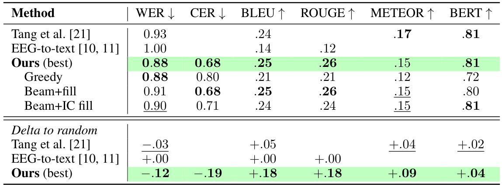
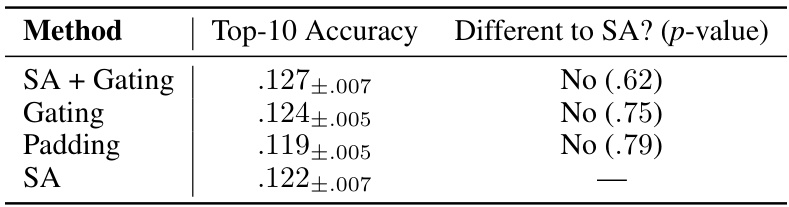
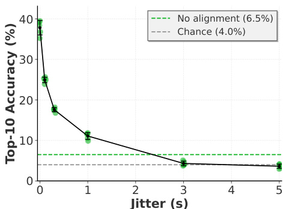
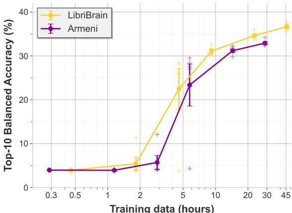
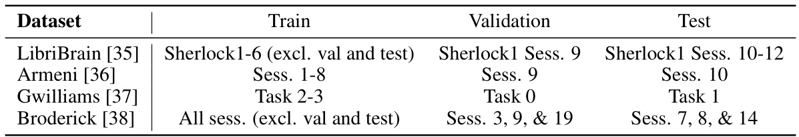
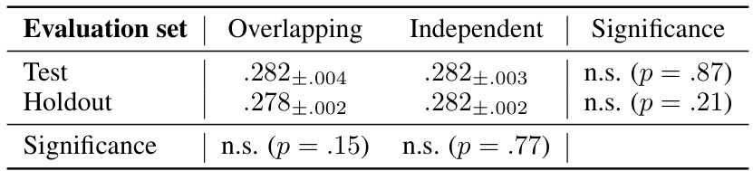
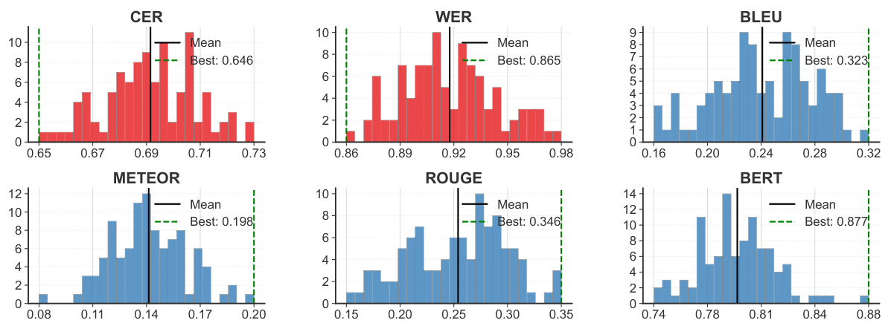

Unlocking Non-Invasive Brain-to-Text
None
Abstract
この論文のAbstract（要旨）の目的は？
この研究は、外科手術を伴わない非侵襲的な方法で、人間の脳活動から直接テキストを生成する「Brain-to-Text (B2T)」技術において、従来達成できなかった高い精度を実現し、そのための新しい手法を提案することを目的としています。
主な論旨は？
これまでの非侵襲的B2Tは性能が低く、実用化が困難でした。しかし、本研究では以下の3つの主要な貢献により、初めて「偶然のレベル」を大幅に超える成果を達成しました。これにより、麻痺した患者さんが手術なしでコミュニケーションをとれるようになる未来のBCI（ブレイン・コンピュータ・インターフェース）開発に、大きな道が開かれることが示唆されます。
1. LLMによる再スコアリング
単語予測を文脈に合わせて賢く調整
2. 予測的穴埋め
未知の単語も文脈から補完
3. データセット間のスケーリング
複数データでモデルを強化
背景：脳から文字へ - B2T技術の現状
私たちの脳活動から、考えていることや話そうとしている内容を直接テキストとして書き出す技術、それが「Brain-to-Text (B2T)」です。これは、特にコミュニケーションに困難を抱える人々にとって、大きな希望となる可能性を秘めています。
侵襲的B2T：高い精度と大きな課題
脳に直接電極を埋め込むなど、外科手術を伴う侵襲的な方法 (invasive brain recordings) では、B2T技術は近年目覚ましい進歩を遂げています。これにより、かなりの精度で音声をテキストに変換できるようになってきました。
侵襲的脳波記録とは？
頭蓋骨を開けて脳の表面や内部に電極アレイなどを設置し、脳神経の電気活動を直接計測する方法です。脳からの信号を鮮明に捉えられるため高精度な解析が期待できますが、手術に伴う身体的負担や感染症などのリスクが避けられません。
非侵襲的B2T：安全性と性能の壁
一方、手術を必要としない非侵襲的な方法 (non-invasive alternatives)、例えば脳波(EEG)や脳磁図(MEG)は、安全性が高いという大きな利点があります。しかし、これらの方法では、脳波信号が頭蓋骨や組織を通過する際に減衰したりノイズが混じったりするため、信号の質が低下しがちです。
そのため、非侵襲的B2Tの精度は、標準的な評価指標 (standard metrics) において、「偶然のレベル (chance)」（＝ランダムに単語を選んだ場合と同程度の正解率）をなかなか超えられない、という厳しい状況が続いていました。
偶然のレベル (Chance level) とは？
例えば、3択問題で何も考えずにランダムに回答した場合の正答率（約33%）のようなものです。B2Tシステムがこれ以下の性能では、実用的な価値があるとは言えません。この「偶然のレベル」を超えることが、非侵襲的B2T研究の最初の大きな目標の一つでした。
立ちはだかる壁：実用化への障壁
この非侵襲的B2Tの性能限界は、大きな技術的障壁となっていました。特に、麻痺 (paralysed individuals) などにより発話によるコミュニケーションが困難な方々が、手術という負担なしに意思伝達を行えるようにする非侵襲的なブレイン・コンピュータ・インターフェース (BCI) の開発を大きく妨げていたのです。
対象者：麻痺などで発話が困難な人々
課題：外科手術のリスクを避けたい
目標：非侵襲的BCIによるコミュニケーション回復
本研究のブレークスルー：偶然を超えた成果
本論文では、この長年の課題に挑戦し、ついに非侵襲的B2Tで初めて、これらの重要なベースライン（偶然のレベル）を有意に超える結果を提示します。
具体的には、評価指標の一つである BLEUスコア を、従来研究と比較して \( \bf{1.4 - 2.6 \times} \) も向上させることに成功しました。
BLEU (Bilingual Evaluation Understudy) スコアとは？
機械翻訳の品質を評価するためによく用いられる指標です。生成されたテキストと、人間が作成した参照テキスト（正解文）とを比較し、n-gram（連続するn個の単語の組）の一致度に基づいてスコアを算出します。スコアは0から1（または0%から100%）の値をとり、高いほど翻訳品質が良いとされます。B2Tの文脈では、脳活動から生成されたテキストが、実際に話された（あるいは聞かれた）内容とどれだけ近いかを測るために使われます。
例：
参照文：「猫がマットの上に座った」
生成文A：「猫がマットの上に座った」 → BLEU高
生成文B：「猫は座ったマットに」 → BLEU中
生成文C：「犬が走った」 → BLEU低
成果を支える3つの貢献
この画期的な成果は、以下の3つの主要な貢献によってもたらされました。
LLMベースの再スコアリングによる単語予測器の拡張
最近の単語分類モデル (word-classification models)（脳活動から個々の単語を予測するモデル）を、大規模言語モデル (LLM) に基づく再スコアリング (rescoring) で拡張しました。これにより、単なる単語予測器を、閉じた語彙 (closed-vocabulary) の範囲内で文脈を考慮したB2Tシステムへと進化させることができました。
用語解説
- 単語分類モデル: 脳活動パターンと特定の単語を結びつけるモデル。例えば、"リンゴ"という言葉を聞いたときの脳活動から "リンゴ" という単語を予測する。
- 大規模言語モデル (LLM): 大量のテキストデータで学習されたAIモデル。文章生成、質問応答、翻訳など、様々な言語タスクで高い能力を発揮する。例：GPTシリーズ、Claudeなど。
- 再スコアリング: 最初の予測結果（ここでは単語列）に対して、LLMがその単語列が自然な文章としてどれだけ尤もらしいか（確率が高いか）を評価し、スコアを再計算すること。これにより、文法的におかしな並びや不自然な単語のつながりを修正し、より自然な文章に近づける。
- 閉じた語彙: システムが認識・生成できる単語のリストが事前に固定されていること。このリストにない単語は扱えない。
例：脳活動から「犬」「散歩」「行く」という単語が予測されたとします。LLMによる再スコアリングは、「犬 散歩 行く」という並びが「犬 行く 散歩」よりも自然かどうかを判断し、より自然なシーケンスのスコアを高くします。
予測的穴埋めアプローチによる未知語彙への対応
語彙外 (Out-of-Vocabulary, OOV) 単語、つまりシステムが事前に学習していない単語に対処するために、予測的穴埋め (predictive infilling) アプローチを導入しました。これにより、実質的に扱える語彙の範囲を大幅に拡大できました。
用語解説
- 語彙外 (OOV) 単語: 閉じた語彙システムにおいて、事前に定義された語彙リストに含まれていない単語のこと。
- 予測的穴埋め: 文脈からOOV単語が入るべき位置を特定し、LLMなどを使ってその位置に適切な単語を予測して「穴埋め」する手法。
例：システムが「私は[OOV]を食べた」と予測し、[OOV]が語彙外の単語だとします。「私は」と「を食べた」という文脈から、LLMが[OOV]の位置に「寿司」や「ラーメン」といった適切な単語を予測して挿入します。
データセット横断的なモデルのスケーリング
初めて、複数のデータセットにまたがって非侵襲的B2Tモデルをスケーリングする (scale non-invasive B2T models across datasets) 方法を実証しました。これにより、大規模な深層学習 (deep learning at scale) が可能になり、精度を \( \bf{2.1 - 2.3 \times} \) 向上させることができました。
用語解説
- データセット横断的なスケーリング: 異なる研究機関や実験条件で収集された複数の脳波データセットを組み合わせて、より大規模なデータでモデルを学習させること。これにより、モデルの汎化性能や精度向上が期待できる。
- 大規模な深層学習: 大量のデータと強力な計算資源を用いて、複雑で大規模なニューラルネットワークモデルを学習すること。
例：A研究所のEEGデータとB大学のMEGデータを組み合わせ、さらにC病院のEEGデータも追加して、より多くの被験者、より多様な条件下での脳活動パターンを学習させることで、頑健で高精度なB2Tモデルを構築します。
新たな知見と将来展望
これらの貢献を通じて、私たちはデータ品質 (data quality) と語彙サイズ (vocabulary size) がB2Tシステムの性能に果たす役割について、新たな知見を得ました。
データ品質の重要性： 高品質なデータセットを組み合わせることで、モデル性能が向上することが示されました。
語彙サイズの最適化： 単に語彙サイズを大きくするだけでなく、OOV処理とのバランスが重要であることが明らかになりました。
総合すると、私たちの研究成果は、実用的な非侵襲的B2Tシステムを実現する上での大きな障害を取り除くものです。これにより、将来的には、手術を必要としない安全な方法で、多くの人々が再びコミュニケーション能力を取り戻せるようになる道が開かれると期待されます。
まとめると…
- 画期的成果: 非侵襲的B2Tで初めて「偶然」を超える性能を達成！ (BLEUスコア \( \bf{1.4 - 2.6 \times} \) 向上)
- 貢献１: LLMで単語予測を賢くし、文脈に合ったB2Tシステムへ。
- 貢献２: 未知語も文脈から予測して穴埋め、使える単語が大幅増！
- 貢献３: 複数データセットで学習し、精度 \( \bf{2.1 - 2.3 \times} \) アップ！
- 意義: 手術なしのB2T実用化への大きな一歩。データ品質と語彙サイズの重要性も明らかに。
1 Introduction
この「はじめに」のセクションでは、脳活動から直接テキストを生成するという、非常に挑戦的で未来的な技術について解説します。特に、手術を伴わない「非侵襲的（ひしんしゅうてき）」なアプローチに焦点を当て、本論文がどのようにして従来の限界を打ち破り、この分野で画期的な成果を達成したのかを紐解いていきましょう。このセクションの主な目的は、非侵襲的なBrain-to-Text (B2T) 技術が、実用化に向けて大きな一歩を踏み出したことを皆さんに理解していただくことです。✏️
B2Tデコーディング：夢の技術への挑戦と現状
Brain-to-Text (B2T) デコーディングとは、人が話したり聞いたりする際に生じる脳の活動（神経信号）を読み取り、それを直接、私たちが普段使っているような自然な言葉（テキスト）に変換する技術のことです。まるでSFの世界のようですが、「頭の中で考えたことが、そのまま文字になる」という究極のコミュニケーション支援を目指す研究分野なのです。これは神経科学における最も難しい課題の一つでありながら、臨床的にも非常に大きな意義を持つとされています。例えば、重度の麻痺などで話すことが困難な方々が、自分の意思を伝えられるようになるかもしれません。📌
近年のB2T研究では、目覚ましい成果も報告されています。しかし、その多くは以下のようなアプローチに依存しています。
最近のブレークスルー（例えば、参考文献[1–5]で報告されているような驚くべき精度のもの）は、外科的手法を用いて脳活動を測定しています。これは、手術によって電極を脳の表面に設置したり、場合によっては脳の内部にまで埋め込んだりする方法です。
- 非常に高い精度で脳信号を捉えられる
- しかし、脳感染症のリスク
- 出血の可能性
- 認知機能への副作用の懸念
このような重大な固有のリスクがあるため、外科的手法は研究目的の試験以外ではなかなか広まらないのが現状です。
そこで期待されるのが、より安全な非侵襲的（ひしんしゅうてき）画像法です。代表的なものにEEG (Electroencephalography：脳波検査) や MEG (Magnetoencephalography：脳磁図) があります。これらは、頭皮の上やその周辺にセンサーを装着するだけで脳の神経活動を測定できるため、手術の必要がありません。
安全性 広範な利用の可能性
しかし、これらの非侵襲的手法は、外科的手術のリスクがない代わりに、信号品質が低いという大きな課題を抱えています。頭蓋骨や脳を覆う組織の電気伝導性、そしてセンサーと脳との物理的な距離によって、脳内で発生した本来の神経信号が減衰 (attenuation) してしまうのです [6]。信号が弱く、ノイズも多いため、精密な情報を読み取るのが難しくなります。
これまで、いくつかの特定の分類タスク（例えば、ある特定の単語を思い浮かべているかどうかを判別するようなタスク）では進歩が見られました [7–9]。しかし、非侵襲的な電気生理学的信号から、人が話したり聞いたりしている内容を完全なテキストとして再構成することは、過去に多くの試みがあったにもかかわらず [10–14]、依然として達成されていませんでした。既存の手法では、標準的な評価指標のセットにおいて、偶然の正解率（ランダムベースライン）を convincingly (説得力を持って) 超えるものはなかったのです [15]。
光明：本研究が打ち立てた金字塔！
このような背景の中、本論文では、初めて全ての主要な評価指標において、全てのクリティカルな偶然ベースラインを有意に超える $(p \ll .001)$ パフォーマンスを達成した非侵襲的B2T手法を提案します！これは、これまでの全ての従来研究を包括的に上回る成果です（下の図1をご覧ください）。具体的には、機械翻訳などの分野で広く用いられる評価指標であるBLEU (Bilingual Evaluation Understudy) スコアにおいて、従来研究の最高値を最大で $2.6$ 倍も改善しました。
BLEUスコア改善 最大 $2.6 \times$
このグラフは、本研究の手法（Ours、太い黒線）が、他の主要な非侵襲的B2T手法（Tang et al. [21], NeuGPT [14], NeuSpeech [12], MAD [13], EEG-to-text [10, 11]）と比較して、どれほど優れているかを示しています。
- 縦軸 (Rank)： 各手法の性能ランキングを表します。1位が最も性能が良いことを意味します。
- 横軸 (Metrics)： B2Tシステムの性能を評価するための様々な指標です。
- WER (Word Error Rate): 単語誤り率。低いほど良い。
- CER (Character Error Rate): 文字誤り率。低いほど良い。
- BLEU: 生成されたテキストと正解テキストのn-gram（連続するn個の単語）の一致度を測る指標。高いほど良い。
- ROUGE: 主に要約タスクで使われる指標で、BLEUと似ているが、再現率（Recall）を重視。高いほど良い。
- METEOR: BLEUやROUGEよりも人間による評価との相関が高いとされる指標。高いほど良い。
- BERTScore: BERTという大規模言語モデルを利用して、生成テキストと正解テキストの文脈的な意味の類似度を評価。高いほど良い。
- ランキングの算出方法： 各手法の性能値と、それに対応するランダムベースライン（偶然の正解率）との絶対的な改善幅に基づいて計算されています。
ご覧の通り、本研究の手法は全ての評価指標において1位を獲得しており、他の手法を大きく引き離しています。これは、非侵襲的B2T研究における大きな進歩を示すものです。
この快挙を支える3つの挑戦と解決策
この歴史的なマイルストーンに到達するために、私たちはいくつかの根本的な課題に取り組みました。
挑戦１：単語予測から文脈的系列デコーディングへ
まず、個々の単語を予測する従来の手法 [9] を拡張し、文脈的系列デコーディング (contextual sequence decoding) を実現しました。これは、大規模言語モデル (Large Language Model, LLM) を用いて、予測された単語がその周囲の文脈にどれだけ適合するかを評価し、スコアを再計算する（リスコアリングする）というものです。
これにより、従来の単語予測モデルが、本格的なB2Tデコーダとして機能することが可能になりました。これは、これまでの系列対系列 (sequence-to-sequence) の音声デコーディング戦略 [12–14] が抱えていた低い性能の問題を克服する鍵となります。
挑戦２：未知語への対応とオープンボキャブラリ化
次に、従来の単語予測モデルは、事前に定義された小さな閉じた語彙 (closed vocabulary) に縛られており、語彙数を増やすことが困難でした。これはB2Tの性能を大きく制限する要因です。例えば、辞書に「りんご」「みかん」しか登録されていなければ、「ぶどう」という単語は決して予測できません。
閉じた語彙の問題点: 扱える単語が限定的 → 表現力が低い
そこで私たちは、インフィリング (in-filling) 戦略を提案します。これは、語彙にない単語 (out-of-vocabulary, OOV words) を検出し、文脈からそのOOV単語を予測して「埋める」手法です。これにより、閉じた語彙しか持たないデコーダでも、実質的に開いた語彙 (open vocabulary) でのテキスト生成が可能になります。
挑戦３：データ不足の解消とスケーリング
これらの技術によって非侵襲的B2Tへの道が開かれましたが、さらなる性能向上にはデータのボトルネックに対処する必要がありました。既存の手法では、個々の音声関連データセットは規模が小さいため、データをスケールアップさせることができませんでした。
さらに、データセット間には、使用されているハードウェア、被験者の解剖学的構造、認知的な個人差など、大きな違いがあります。そのため、複数のデータセットを単純に組み合わせても、複雑なタスク（例えば [7, 16–20]）で意味のある性能向上を達成するのは困難でした。
データ統合の難しさ: データセットごとの特性の違いが大きい → 単純結合では効果薄
私たちはこの根本的なボトルネックを、個々のデータセットの単独での性能 (standalone dataset performance) をそのデータセットの「品質」の指標として定義することで解決しました。そして、高品質なデータセットは他のデータセットともうまく組み合わせられるという観察に基づき、選択的にデータをプール (selectively pool data) することで、単語分類の精度を2倍以上に向上させることに成功しました。
高品質データセットA + 高品質データセットB + 対象データセットC → 対象データセットCでの性能向上！
本研究の主な貢献まとめ 🏆
要約すると、本研究の主な貢献は以下の3点です：
貢献1 文脈的なLLMリスコアリングにより、非侵襲的デコーディングを単一単語予測から完全なB2Tへと進化させました。
貢献2 予測的インフィリング戦略により、閉じた語彙のB2Tを実質的に開いた語彙でのデコーディングへと転換しました。
貢献3 選択的データセットプーリングフレームワークによりスケーリングを可能にし、単語分類精度を最大で $2.3$ 倍向上させました。
これらの進歩により、非侵襲的B2Tを確立するための前提条件となる偶然ベースラインを超える最初のシステムが実現し、従来の研究を圧倒する成果を上げました。
さらに、私たちのアブレーションスタディ（手法の各要素を取り除いて性能変化を調べる実験）は、従来の手法を無効化したコントロール（対照実験）と比較して、提案手法の各構成要素を厳密に検証し、B2Tシステムを検証するための新しい標準を確立しました。
非侵襲的手法でも意味のある結果が得られることを実証することで、私たちの研究は、「音声デコーディングには外科的な画像法が必要である」という従来の仮定に疑問を投げかけ、今後の数年間における進歩への道を切り開きます。📝
この研究は、非侵襲的B2T技術の未来を大きく拓く一歩となるでしょう！
2 Related Work
このセクションでは、本論文の研究を理解するための背景となる「関連研究」について解説します。
音声デコーディングBrain-Computer Interface (BCI) の分野は、大きく分けて外科的手法と非侵襲的手法という2つの流れで進展してきました。これらの手法は、性能と実用性の間で異なる特徴を持っています。本研究は非侵襲的手法に焦点を当てています。
外科的手法のアプローチ
🔬 高い性能を持つが、手術が必要で適用範囲が限定的。
非侵襲的手法のアプローチ
🛡️ 安全性が高いが、信号対雑音比（SNR）が低く、性能向上が課題。
この「効果（Efficacy）」と「アクセシビリティ（Accessibility）」の間の緊張関係が、現在の研究状況を特徴づけています。このセクションでは、急速に進化するこの分野における本研究（非侵襲的アプローチ）の位置づけを明確にします。
外科的音声BCIの進展
ここ数年で、外科的アプローチを用いた音声BCIにおいて、いくつかの画期的な成果が報告されています。
Mosesらが、麻痺した患者向けに50語の語彙を持つBrain-to-Text (B2T) 神経補綴（ニューロプロステーシス）を開発しました [1]。
用語解説：神経補綴 (Neuroprosthesis)
失われた神経機能を代替または補完するために設計された人工デバイスのこと。この文脈では、脳活動から音声を合成・テキスト化する装置を指します。
Willettらが、同様の性能で125,000語という非常に大きな語彙数を実現しました [3]。
主な技術革新
これらの研究の成功は、以下の2つの要素によるものです：
- 高解像度の脳信号記録: より詳細な脳活動情報を取得。
- 深層ニューラルネットワーク（DNN）の利用: 複雑な脳信号パターンから音声情報をデコード。
これらのマイルストーンの後、さらなる研究が進められています：
- 迅速なキャリブレーション手順の導入：脳信号の非定常性（時間経過による信号特性の変化）による性能低下を軽減 [4]。
- リアルタイム音声合成の実現 [5]。
外科的手法の限界
これらの進展は目覚ましいものですが、外科的アプローチには合併症の重大なリスクが伴います。そのため、管理された臨床試験以外での利用は限定的です。
非侵襲的アプローチの現状と課題
非侵襲的アプローチは安全である一方、記録される信号の質が外科的手法に比べてノイズが多いという課題があります。この信号品質の低さが、B2Tのような複雑なタスクよりも単純なタスクに有望な研究を限定してきました。
Défossez et al. [8] の研究
音声知覚時の音声データとMEGデータのペアをマッチングさせる対照学習 (Contrastive Learning)手法を開発しました。
用語解説：対照学習 (Contrastive Learning)
類似したデータサンプル間の距離を近づけ、異なるデータサンプル間の距離を遠ざけるように学習する自己教師あり学習の一種です。この研究では、同じ音声に対応する脳活動データと音声データが「類似ペア」、異なる音声に対応するものが「非類似ペア」となります。
![Contrastive Learning Illustration]()
d’Ascoli et al. [9] のプレプリント
上記の手法を拡張し、単語埋め込み (Word Embeddings) とMEGデータのペアを用いて単語分類を行いました。
用語解説：単語埋め込み (Word Embeddings)
単語を低次元の密なベクトルで表現する手法です。単語の意味的な類似性や関連性をベクトル空間上の距離や方向として捉えることができます。例えば、「王様」と「女王」は似たベクトル、「歩く」と「走る」も似たベクトルになります。
これらの研究の限界点
これらの研究は印象的ですが、どちらもシーケンスレベルのBrain-to-Text（文単位でのデコーディング）を可能にするものではありませんでした。
- Défossezらの手法[8]は、ペアとなる音声データが必要でした。
- d’Ascoliらの手法[9]は、語彙サイズが小さいこと、そして貪欲な単語予測 (Greedy Word Prediction) に限定されているという制約がありました。
用語解説：貪欲な単語予測 (Greedy Word Prediction)
文脈を考慮せず、各時点で最も確率が高い単語を逐次的に選択していく予測方法です。計算は速いですが、必ずしも文全体として最適な予測になるとは限りません。例えば、「今日は良い天気」と予測したい場合、「今日」の次に「は」が最も確率が高くても、「今日は」の次に「悪い」が続くよりも、「今日は良い」と続く方が文全体として自然な場合がありますが、貪欲予測では局所的な最適解を選んでしまいます。
非侵襲的B2T音声デコーディングの試み
困難にもかかわらず、非侵襲的なB2T音声デコーディングの試みは続けられています。
fMRI Tang et al. [21]: 3人の参加者において、音声知覚時のfMRIデータから有意な結果を得ました。しかし、fMRIの時間分解能が低いため、単語レベルの細かさでデコードすることはできず、意味的な言い換え (Semantic Paraphrasing) に留まりました。
用語解説：fMRI (functional Magnetic Resonance Imaging)
脳の活動に伴う血流動態反応を視覚化する手法。高い空間分解能を持ちますが、血流変化を捉えるため時間分解能は数秒単位と比較的低いです。
用語解説：時間分解能 (Temporal Resolution)
どのくらい短い時間間隔の変化を区別して計測できるかを示す能力。B2Tでは、素早い発話に対応するために高い時間分解能が求められます。
EEG Wang and Ji [10], Duan et al. [11]: テキストを読んでいる参加者のEEGデータから、オープンボキャブラリーB2Tを試みました。しかし、Jo et al. [15] による後の分析で、これらの研究の評価指標が評価時のTeacher-Forcingによって影響を受けていたことが明らかになり、これを修正すると性能はランダムノイズ入力のベースラインと同程度になりました。
用語解説：EEG (Electroencephalography)
頭皮上に配置した電極から脳の電気活動を記録する手法。時間分解能は高いですが、空間分解能はfMRIより低く、信号も頭蓋骨などで減衰しやすいです。
用語解説：Teacher-Forcing
シーケンス生成モデルの学習時に、各タイムステップでモデル自身の予測ではなく、正解の出力を次の入力として与える手法。学習を安定させる効果がありますが、評価時に使うと性能を過大評価する可能性があります（Exposure Bias問題）。
MEG 最近のMEGベースB2Tのプレプリント [12–14]: 有望な方向性を示していますが、現在の評価ではノイズベースラインが不足しており、ランダムな単語選択を超える性能はまだ示されていません。
用語解説：MEG (Magnetoencephalography)
脳の電気活動によって生じる微弱な磁場を頭蓋外で計測する手法。EEGと同様に高い時間分解能を持ち、EEGより空間分解能が高いとされることもありますが、大掛かりな装置が必要です。
その他 隣接分野の研究 [22, 23]: タイピングや手書きによる脳活動や筋活動から非侵襲的に文字デコーディングを試みる研究もあります。これらは重要ですが、音声知覚ではなく筋肉運動に関連する神経活動をデコードするため、典型的なB2Tとは異なります。したがって、参加者が動く必要があり、麻痺した患者には適用できません。
図2：Brain-to-Text デコーディング手法の概要
この図は、本論文で提案されている非侵襲的Brain-to-Text（B2T）デコーディング手法の全体像を示しています。以下に各ステップを解説します。
-
1複数データセットの統合 (Pooling Data):
まず、複数の異なるデータセット（例：AとB）から脳活動データを集めます。これらは異なる被験者や計測条件で収集された異質なデータです。
-
2単語開始時点へのアライメント (Align to Word Onsets):
収集した脳活動データを、各単語が提示された（または話された）開始時点に合わせてセグメント化（区間分け）します。
-
3シグナルエンコーダ (Signal Encoder):
セグメント化された脳データはシグナルエンコーダに入力されます。このエンコーダは、データセット間の違い（センサー数やノイズレベルなど）を吸収し、共通の特徴表現（潜在表現）に変換します。
-
4Transformerによる文脈学習:
エンコードされた潜在表現のシーケンスは、Transformerモデルに入力されます。Transformerは、単語間の関係性や文脈情報を学習し、文脈を考慮した埋め込み表現を生成します。
-
5ターゲット単語埋め込みの予測:
Transformerの出力は、大規模言語モデル（LLM）から抽出されたターゲット単語の埋め込み表現を予測するのに使われます。
-
6Logit分布へのマッピング:
予測された埋め込み表現は、ターゲット語彙上のlogit分布（各単語の「らしさ」のスコアの分布）に変換されます。
-
7ビームサーチと文脈的再スコアリング (Beam Search with Contextual Rescoring):
Logit分布から、最も確率の高い単語シーケンス（文）を構築するために、ビームサーチアルゴリズムが用いられます。この際、文脈的な自然さを考慮して候補文のスコアを再計算（リランキング）します。
-
8未知語処理 (Out-of-Vocabulary In-filling):
もし刺激（元のテキスト）に語彙にない単語（OOV: Out-of-Vocabulary words）が検出された場合、穴埋めモデル（in-filling model）がこれらの位置に適切な単語を挿入します。
この手法のポイントは、異質なデータセットを効果的に組み合わせ、TransformerとLLMを活用して文脈情報を捉え、未知語にも対応することで、より精度の高い非侵襲B2Tを目指している点です。
非侵襲的デコーディングにおけるデータボトルネック
非侵襲的デコーディングで有意な結果を得るのが難しい主な理由は、データボトルネックにあります。
データセットの現状
- 一般的にデータセットは非常に小さい（多くは数時間程度）。
- 少数の被験者から収集されることが多い。
そのため、ディープラーニングのスケールに到達するには、複数のデータセットを組み合わせる必要があります。しかし、これはいくつかの例外を除いて、まだ説得力のある形で達成されていません。
データセット統合の試み（例外）:
- 🧠 Brain Foundation Models [18–20, 24–27]: 特に音声デコーディングにおける Jayalath et al. [7] の研究。
- Gideoni et al. [16]: ソース空間でのプーリングを利用。
用語解説：ソース空間 (Source Space)
MEG/EEGセンサーで計測された信号（センサー空間）から、脳内の信号源の位置や活動強度を推定した空間のこと。解剖学的な情報などを用いて、信号が脳のどの領域から発生したかを推定します。
- Ridge and Parker Jones [17]: 敵対的ハーモナイゼーション (Adversarial Harmonisation) を利用。
用語解説：敵対的ハーモナイゼーション
異なるデータセット間の特性の違い（ドメインシフト）を、敵対的学習を用いて軽減し、データをより均質化する手法。一方のネットワークがデータセットの違いを識別しようとし、もう一方のネットワークがその識別を困難にするようにデータを変換することで、データセット間の差異を曖昧にします。
これらの手法はすべて、音声存在の分類のような単純なタスクではわずかな改善を示しています。しかし、脳と音声セグメントのマッチング[8]や単語分類[9]のような、より洗練されたタスクでは、データセットを組み合わせても性能向上は達成できていませんでした。
本研究の独自性と貢献
著者らの知る限り、本研究は電気生理学的な非侵襲B2Tアプローチとして初めて以下の2点を達成しました：
- (a) 様々な評価指標において、偶然レベルや他のベースラインを超えるシーケンスデコーディングを実現。
- (b) データセットプーリングによって大幅な性能向上を実証。
次のセクションでは、このB2T手法について詳しく説明します。
3 Method
このセクションでは、連続的な脳活動データから連続的なテキストを書き起こすための手法を提案します。私たちの最終目標は、脳波のような非侵襲的な方法で取得された脳活動の記録を、人間が理解できる自然な文章に変換することです。
私たちのモデルへの入力は、脳活動の記録 $\boldsymbol{X} \in \mathbb{R}^{s \times T}$ です。ここで、
- $s$ は脳波センサーの数（例：電極の数）
- $T$ は信号の時間点の数（例：記録時間全体のサンプル数）
そして、モデルの出力は、ターゲットとなるテキスト $Y \in \mathcal{V}^N$ です。ここで、
- $\mathcal{V}$ は英語の語彙セット（例：辞書に載っている全ての単語）
- $N$ は刺激として提示されたテキスト（被験者が聞いたり読んだりしたテキスト）を構成する単語の数
以下の図2は、提案手法の全体像を示しています。このセクションの残りの部分で、各ステップを詳細に説明していきます。
この図は、私たちの脳波解読モデルがどのように動作するかをステップごとに示しています。
- Dataset pooling (データセットプーリング): 複数の異なる実験や被験者から得られた脳活動データ（例：データセットAとB）を統合します。これにより、より多くのデータでモデルを学習できます。
- Aligned segments (整列セグメント): 収集した脳活動データ（波形のような信号）を、提示された文章中の各単語が始まったタイミング（単語オンセット）で区切ります。例えば、「The」「cat」「sat」という単語列があった場合、それぞれの単語に対応する脳活動の区間 $t_1, t_2, t_3, \dots$ を切り出します。これらを $\boldsymbol{X}$ とします。
- Signal encoding (シグナルエンコーディング): 切り出された各脳活動セグメントは、シグナルエンコーダに入力されます。このエンコーダは、脳波信号から意味のある特徴を抽出する役割を担います。
- Context encoding (コンテキストエンコーディング): シグナルエンコーダから出力された特徴表現は、次にTransformerモデルに入力されます。Transformerは、単語列の文脈、つまり単語同士の関連性を捉えるのに長けたモデルです。例えば、「cat」という単語が「The」の後に来て「sat」の前に来る、といった文脈情報を考慮します。
- Vocabulary logits (語彙ロジット): Transformerの出力は、各単語候補に対するスコア（ロジット）の分布に変換されます。図では、時間ステップ $t_1$ と $t_2$ では特定の単語の確率分布が得られていますが、$t_3$ ではOOV (Out-of-Vocabulary)、つまりモデルの既知の語彙に含まれない単語として検出されています。
- 損失計算: モデルの訓練中には、Transformerからの出力（予測された単語の埋め込み表現 $\hat{Y}$）と、正解となる単語の埋め込み表現 $Y$（通常、大規模言語モデル（LLM）から抽出）との間の差異（損失 $\mathcal{L}$）を計算し、この損失を最小化するようにモデルを調整します。
- Brain-to-text reconstruction (Brain-to-Text 再構成): 最終的なテキスト生成は、以下の2つの主要なプロセスで行われます。
- LLM rescoring (LLMによる再スコアリング): まず、Transformerが出力した単語候補のシーケンスを、大規模言語モデル（LLM、図ではラマのアイコンで表現）を使って評価し直します。LLMは文法的に正しく、意味的にも自然な文章の流れになるように、単語のシーケンスのスコアを調整します。このプロセスは、ビームサーチという探索アルゴリズムと組み合わせて行われることが多いです。図の例では、「The」の後に「cat」が来て、その次に「sat」が続くか、「dog」の後に「ran」が続くか、といった複数の候補パス（点線）を評価します。
- LLM in-filling (LLMによる補完): もしOOV単語（語彙にない未知語）が検出された場合（図中
）、LLMを使ってその部分に適切な単語を補完します。文脈から最も自然な単語を推測して埋めます。
これらのステップを経て、脳活動信号から元の刺激テキストに近い文章を再構成することを目指します。
3.1 Decoding Words (単語のデコーディング)
まず、複数のデータセットから脳活動の記録を収集し、プール（統合）します。これにより、モデルが学習できるデータの量を増やし、多様性を高めます。次に、各脳活動記録を、個々の単語の開始時点に合わせてセグメント化します。つまり、ある単語が提示された瞬間に始まる脳波の短い区間 $\boldsymbol{x}_i \in \mathbb{R}^{s \times t}$ を切り出します。ここで $t$ はセグメントの時間長です。このプロセスをデータの整列（アライメント）と呼びます。これらのセグメントは、次にシグナルエンコーダに入力されます。
シグナルエンコーダは、以下のステップで構成されます。
シグナルエンコーダの後段では、d'Ascoliら [9] の研究に倣い、Transformerエンコーダ [28] を明示的に使用して、単語に整列された脳活動セグメント間の文脈的関係性を学習します。Transformerエンコーダは、$n$ 個の連続する潜在埋め込みのシーケンスを処理し、同じく $n$ 個の文脈情報を加味した埋め込み（コンテクスチュアル埋め込み）を出力します。
学習には、対照損失 (Contrastive Loss) の一種である D-SigLIP [9] を用います。この損失関数は、Transformerの出力（脳活動から予測された単語の埋め込み）を、T5大規模言語モデル [29] の中間層から抽出されたターゲット単語埋め込みに近づけるように学習を進めます。
ターゲット埋め込みは、検索セット (retrieval set) と呼ばれる、データセット中のテキストで最も頻繁に出現する上位 $M$ 個の単語から構成される語彙 $\mathcal{V}_M$ から事前に計算しておきます。モデルは、予測された埋め込みと、検索セット内の各ターゲット埋め込みとの間のコサイン類似度を計算し、その分布を出力します。そして、予測された埋め込みに対してコサイン類似度が最大となるターゲット埋め込みに対応する単語を、デコードされた単語として予測します。
検索セットとは？
例えば、データセット中の文章が「猫がマットの上に座った。犬が走った。」だったとします。もし頻出単語上位3つを検索セットとするなら、「が」「た」「。」などが候補になるかもしれません（実際はもっと大規模なデータで統計を取ります）。モデルは、脳活動から「猫」という単語を予測しようとする際、この検索セット内の「が」「た」「。」などの単語埋め込みとの類似度を比較し、最も近いものを選択します。
3.2 Advancing From Words to Sequences (単語からシーケンスへ)
ここまでは、限られた語彙の中から個々の単語を予測する方法について説明しました。このセクションでは、この閉鎖語彙 (closed-vocabulary) の単語予測から、より実用的な開放語彙 (open-vocabulary) のBrain-to-Text (B2T) を実現するための手法を提案します。
私たちのモデルは、$n$ 個の脳データセグメントのシーケンスが与えられたとき、各ステップに対応する $n$ 個のコサイン類似度分布を同時に予測します。そして、モデルが出力する各コサイン類似度分布を、ソフトマックス関数を用いて確率分布 $P_{\mathrm{model}}(w_i | \mathbf{x})$ に変換します。ここで $w_i$ は $i$ 番目の単語、$\mathbf{x}$ は脳データセグメントのシーケンス全体を表します。
Greedy Decoding (貪欲デコーディング)
もし各時間ステップ（各単語）を独立にモデル化する場合、ある単語シーケンス $\mathbf{w}_{1:n} = (w_1, w_2, \ldots, w_n)$ が全ての脳データセグメント $\mathbf{x}$ から生成される確率は、単純に個々の単語の確率の積となります。したがって、最も確からしいシーケンスは次のように与えられます。
ここで $\mathcal{V}_M$ は検索セットの語彙です。この方法は一般的に貪欲デコーディング (greedy decoding) と呼ばれます。各ステップで最も確率の高い単語を選択していく単純な方法です。
貪欲デコーディングは、自然な英語のテキストにおいて、ある単語の並びがどれだけ出現しやすいか（尤度）を考慮しません。例えば、「I am a student」は自然ですが、「I student a am」のような、各単語の予測確率が高くても文法的に不自然なシーケンスを選んでしまう可能性があります。
LLMによる再スコアリングとビームサーチ
そこで、この問題を解決するために、事前学習済みの大規模言語モデル (LLM) を導入します。LLMは、大量のテキストデータで学習されており、文法的に正しく、意味的にも自然な文章を生成する能力を持っています。このLLMを使って、候補となる単語シーケンスがどれだけ自然な英語らしいかを評価し（LLMがそのシーケンスに割り当てる確率を使用）、スコアを再計算（再スコアリング）します。
この再スコアリングは、ビームサーチ (beam search) と呼ばれる探索アルゴリズムの一部として実行されます。ビームサーチは、各ステップで確率の高い候補を一定数（ビーム幅）だけ保持し、それらを拡張していくことで、最適なシーケンスを見つけようとするものです。
ステップ $i$ における候補ビーム（部分的な単語シーケンス $\mathbf{w}_{1:i}$）のスコアは次のように計算されます：
$$ \begin{array}{rl} \mathrm{score}(\mathbf{w}_{1:i} | \mathbf{x}, \mathbf{w}_{1:i-1}) = & \mathrm{score}(\mathbf{w}_{1:i-1} | \mathbf{x}, \mathbf{w}_{1:i-2}) \\ & + \log P_{\mathrm{model}}(w_i | \mathbf{x}) \\ & + \lambda \log P_{\mathrm{rescorer}}(\mathbf{w}_{1:i}) \end{array} $$解説：
- $\mathrm{score}(\mathbf{w}_{1:i-1} | \mathbf{x}, \mathbf{w}_{1:i-2})$: 1つ前のステップまでのスコア。
- $\log P_{\mathrm{model}}(w_i | \mathbf{x})$: 現在の単語 $w_i$ が脳活動 $\mathbf{x}$ からデコードされる確率（対数）。脳波デコーディングモデルの出力を反映します。
- $\lambda \log P_{\mathrm{rescorer}}(\mathbf{w}_{1:i})$: LLM（再スコアラー）が、現在の単語列 $\mathbf{w}_{1:i}$ に割り当てる確率（対数）。$\lambda$（ラムダ）は、デコーディングモデルの貢献とLLMの貢献のバランスを取るための重みです。これが大きいほど、LLMによる言語的な自然さが重視されます。
そして最終的に予測されるシーケンスは、全てのビーム候補 $\mathcal{B}$ の中で最もスコアが高いものとして選ばれます：
$$ \hat{\mathbf{w}}_{1:n} = \arg\operatorname*{max}_{\mathbf{w}_{1:n} \in \mathcal{B}} \left[ \mathrm{score}(\mathbf{w}_{1:n} | \mathbf{x}, \mathbf{w}_{1:n-1}) \right] $$実験では、再スコアリング用のLLMとして Llama 3.2-1B [30] を使用します。関連研究 [3] では、音素レベルの言語モデルとビタビ探索 (Viterbi search) [31]（正確かつ最適なデコーディングアルゴリズム）を用いて予測を再スコアリングしていますが、LLMと言葉単位のデコーディングを長いシーケンスに適用すると計算コストが非常に高くなるため、本研究ではその近似的な代替手段としてビームサーチを使用します。
単語レベルのデコーディングは、閉鎖語彙 (closed vocabularies)、つまり予め定義された限られた単語のセットしか扱えないという制約があります。語彙サイズを大きくすればより多くの単語をデコードできますが、逆に語彙が大きすぎるとデコーディング性能が低下するというトレードオフがあります（詳細は付録Eを参照）。
そこで私たちは、性能の良い（比較的小さな）語彙を活用しつつ、語彙外 (Out-of-Vocabulary, OOV) 単語、つまり学習時に使った語彙に含まれていない未知の単語を検出し、文脈情報を使ってその欠けている単語を補完 (in-filling) することで、この問題を解決しようとします。
OOV単語の検出
OOV単語を検出するために、「モデルが学習していない単語に対応する脳反応が提示された場合、モデルの確信度は低くなるだろう」という仮説を立てます。エンコーダの出力である単語に関する確率分布 $\mathbf{p}_i \in \mathbb{R}^{|\mathcal{V}_M|}$ はモデルの確信度を表すと考えられるため、学習済みエンコーダから特徴ベクトル $\mathbf{f}_i = [\mathbf{p}_i, \phi(\mathbf{p}_i)]$ を抽出します。ここで $\phi(\mathbf{p}_i)$ は確率分布の統計量（例：エントロピーなど）のセットです。これらの特徴を使って分類器を学習し、ある位置の単語がOOVである確率 $P(w_i \notin \mathcal{V}_M | \mathbf{f}_i)$ を推定します。（論文中では $P ( w _ { i } \notin \bar { \mathcal { V } _ { M } } | \mathbf { \bar { f } } _ { i } )$ と記載されていますが、バー($\bar{\ }$)はここでは「〜でない」という意味で解釈できます。）この分類器が、推論時に補完すべき位置を選択します。OOV検出の詳細は付録Hで説明します。
次に、いくつかの可能な補完戦略について説明します。
戦略1: ビームデコーディング中の補完
ビームデコーディング中、候補となる単語シーケンス $\mathbf{w}_{1:i}$ を逐次的に構築していきます。各デコーディングステップ $i$ で、モデルは検索セット語彙 $\mathcal{V}_M$ から上位 $K$ 個の次の単語候補を提案します。各ビーム仮説について、提案された単語 $w_i$ が $\mathcal{V}_M$ に含まれていない場合（つまりOOV単語と判定された場合）、その単語は現在の仮説に基づいてLLMによって補完された単語に置き換えられます。
具体的には、各ビームは次の単語 $w_i$ で更新されます：
解説：
- もし $w_i$ が既知の語彙 $\mathcal{V}_M$ に含まれていれば、通常のビームサーチのスコア（式2で定義）が最大となる単語を選択します。
- もし $w_i$ がOOV単語であれば（$w_i \notin \mathcal{V}_M$）、LLM（フィラー）がそれまでの文脈 $\mathbf{w}_{1:i-1}$ を考慮して生成する単語候補の中から、最も確率 $P_{\mathrm{filler}}$ の高いものを選択します。ここで $\mathcal{V}_{\mathrm{filler}}$ はLLMが補完に使用する語彙です。
このようにして、完全なビームサーチはこれらの置換された仮説で進行し、以前と同様に（式3に従って）ビームセットから最良の仮説を選択します。
$P_{\mathrm{filler}}(w_i | \mathbf{w}_{1:i-1})$ を一般的なLLMから計算するのは簡単ではありません。なぜなら、多くのLLMは単語単位ではなく、より細かいトークン単位で動作するからです。トークンレベルの確率から単語レベルの確率を得るために、LLMの予測に対してさらにトークンレベルのビームサーチを行い、ビーム仮説を単語仮説とします。補完に使用するLLMは再スコアリングに使用するLLMと異なっていても構いませんが、この実験では重みを共有しています。
限界点:
- トークンレベルの確率分布を単語仮説に解決するために、別のビームサーチが必要になります。
- シーケンス内の先行する単語の知識のみを使用し、後続の単語の知識は使用しません。
戦略2: インコンテキストLLMによる後処理補完 (In-context LLM In-filling)
上記戦略1の限界に応えるため、最良のビームシーケンス全体を生成した後にのみ欠損位置を補完するインコンテキストLLM法を設計します。この方法では、まず式3のように完全なビームサーチを実行しますが、語彙外単語の位置には <UNK> トークン（Unknownの略）を挿入します。次に、この<UNK> を含む最良のビームシーケンス
と、欠損位置を埋めて完全なシーケンスを出力するように指示するプロンプトをLLMに与えます。この時点では文脈にシーケンス内の全ての既知の単語が含まれているため、補完は先行する文脈と後続する文脈の両方を利用できます。これは双方向LLM（例：BERT [32]）でも同様に可能ですが、このようにインコンテキストで行うことで、トークンを介さずに直接単語を補完できます。
限界点:
ビームサーチ中の補完ではシーケンス後半の情報を使用しませんが、このインコンテキスト補完では、欠損位置を埋める可能性のある単語を考慮しながら再スコアリングを行うわけではありません。
戦略3: 同時再スコアリングと補完 (Simultaneous Rescoring and In-filling)
上記2つの戦略の限界は、再スコアリングと補完を同時に行うことで対処できます。これを行うために、以前と同様にLLMにプロンプトを与えますが、最初にビーム再スコアリングを行うのではなく、LLMに確率上位5つの単語から選択させます。したがって、ビームシーケンスの代わりに、プロンプトには単語とその確率の5つ組のシーケンスが含まれます。
ここで $p_i$ は、単語 $w_{ij}$ とその確率 $\rho_{ij}$ のペアからなる5つ組です（$V$ は全語彙）。LLMは、文のコヒーレンス（一貫性）の概念に基づいて既知の位置に最適な単語を選択し、<UNK> とマークされた未知の位置に欠損単語を補完して、完全なシーケンスを出力します。
LLMへの指示と出力形式
両方のLLMベースの方法では、LLMに $\mathfrak{f}\text{1: } w_1\text{, 2: } w_2\text{, } \ldots \text{, } n\text{: } w_n \mathfrak{F}$ の形式で番号付き辞書を出力するように指示します。この制約された形式は、正しい出力数 $n$ を持つより堅牢な応答につながることがわかりました。これは、列挙されたキーのおかげだと考えられます。さらに、LLMベースの方法は、再スコアリングと補完についてより深く推論するために自己反映的な思考の連鎖 (self-reflective chain-of-thought) を可能にするモードを使用できます。実験では、Claude Sonnet 3.7 thinking [33] を使用してこれを活用します。プロンプトの詳細は付録Lにあります。
この表は、提案手法が既存の非侵襲的B2T（脳波からのテキスト化）技術と比較して、どの程度性能を向上させたかを示しています。いくつかの評価指標（BLEU, WER, CERなど、詳細はセクション4で説明）において、既存手法（Tang et al. [21]の3被験者の平均値、Wang and Ji [10]の最良結果）を上回る結果が得られたことを示唆しています。「Delta to random」は、各手法とそれに対応するランダムベースラインとの差を示しており、我々の手法がランダムな予測よりも大幅に優れていることを示しています。
この表の結果は、提案手法の有効性を示唆しており、特にLLMを活用した再スコアリングやOOV単語の補完戦略が、非侵襲的B2Tの性能向上に貢献していると考えられます。
4 Experiments
このセクションでは、提案された非侵襲的Brain-to-Text（B2T）手法の有効性を検証するための様々な実験について詳述します。主な目的は、提案手法が既存の手法を上回る性能を示すこと、データボトルネックを克服する戦略の有効性を示すこと、そして語彙サイズがデコード性能に与える影響を分析することです。
これらの実験を通じて、非侵襲的B2Tシステム実現に向けた重要な洞察を提供します。
データセット
実験では、主に以下のデータセットが使用されました。
- LibriBrain [34, 35]: 主データセット
- 内容: シャーロック・ホームズのオーディオブックを聞いている1人の被験者から収集された50時間のMEGデータ。
- 役割: 主な性能評価に使用。
- Armeni et al. [36]: 補助データセット
- 内容: 3人の被験者がそれぞれ10時間物語を聞いている際のMEG記録。
- 役割: データプーリング実験などに使用。
- Gwilliams et al. [37]: 補助データセット
- 内容: 27人の被験者がそれぞれ4つの短い物語を聞いている際のMEGデータ。
- 役割: データプーリング実験などに使用。
- Broderick et al. [38]: 補助データセット
- 内容: 19人の被験者がそれぞれ20の短い音声セグメントを聞いている際のEEGデータ。
- 役割: データプーリング実験（特に異種モダリティ）に使用。
手法 (略語解説)
論文中で使われる主な手法の略語は以下の通りです。
- ✏️ Greedy: 各単語の予測において、最も確率の高い単語を単純に選択する手法。（論文中 Equation 1参照）
- 빔 beam: 大規模言語モデル（LLM）を使って、予測された単語列の尤度を再計算（リランキング）する手法。（論文中 Equation 5参照）
- ➕ + fill: LLMによる再スコアリングの過程で、語彙外（OOV）単語などを補完する手法。（論文中 Equation 6参照、原文は $+ \hbar ll$）
- ➕ + IC fill: LLMによる再スコアリング後に、文脈情報を利用して単語を補完する手法。（論文中 Equation 7参照）
- ✍️ IC transcribe: 文脈情報を利用した再スコアリングと単語補完の両方を行う手法。（論文中 Equation 8参照）
- 🔍 OOV-D: 語彙外単語（Out-Of-Vocabulary word）検出器。この検出器を使って、補完すべき単語の位置を特定します。
ランダムベースラインについては、Appendix Iで詳細が説明されています。
評価指標
B2Tシステムの性能は、以下の6つの指標で評価されます。
- WER (Word Error Rate): 単語誤り率。予測された単語列と正解の単語列を比較し、誤っている単語の割合を計算。値が低いほど良い。
- CER (Character Error Rate): 文字誤り率。WERと同様だが、文字レベルで誤りを計算。値が低いほど良い。
- BLEU-1 [39]: n-gram（ここでは1-gram）の一致度に基づく評価指標。主に機械翻訳で使用。値が高いほど良い。
- ROUGE-1F [40]: n-gram（ここでは1-gram）の再現率と適合率のF値に基づく評価指標。主に自動要約で使用。値が高いほど良い。
- METEOR [41]: 単語の一致（シノニムやステミングも考慮）や順序も評価する指標。値が高いほど良い。
- BERTScore [42]: BERTを用いて予測文と参照文の意味的な類似性を評価する指標。値が高いほど良い。
シーケンスをデコードしない場合（単語分類タスク）は、top-10 balanced word classification accuracy が用いられます。これは、語彙内の各単語に対する精度を計算し、それらの平均（マクロ平均）を取ったものです。
表中では、最良の結果が太字で、2番目に良い結果が下線で示されます。空欄は元論文で報告されていない指標を示します。常に平均値と標準誤差が報告されます。
4.1 Realising Non-Invasive Brain-To-Text (非侵襲的Brain-to-Textの実現)
このサブセクションでは、提案手法が非侵襲的音声デコードにおいて、既存の最高性能を報告していた手法群を全ての評価指標で上回り、新たなSOTA（State-of-the-Art: 最新技術水準）を確立したことを示します。具体的なデコード例などはAppendix Mで提供されています。
性能比較: 既存手法との対決
Table 1は、提案手法と既存の非侵襲的手法（EEGベース、fMRIベース）の性能を比較しています。
"delta to random" とは？
これは、各手法の性能とその手法に対応するランダムベースライン（偶然による性能）との差を示します。この値が大きいほど、その手法が偶然以上の有意な性能を達成していることを意味します。実験プロトコルが異なる先行研究間での比較を公正にするために重要な指標です。
- 🆚 EEGベースの手法 [10, 11] との比較:
提案手法は全ての指標でEEGベースの手法よりも大幅に優れた結果を達成しています。これは、Jo et al. [15] の研究でEEG-to-text手法が偶然レベルの性能しか示していないことが指摘されているため、驚くべきことではありません。
- 🆚 fMRIベースのSOTA手法 [21] との比較:
提案手法は、fMRIベースのSOTA手法とほぼ全ての指標で同等か、それ以上の性能を示しています。
Table 2 解説: MEGベースB2T手法との比較
Table 2は、提案手法が既存のMEGベースのB2Tアプローチを全て上回っていることを示しています。NeuGPT [14] はコードが公開されていないため、同じデータと分割で検証・テストし、その結果（ベースライン[12, 13]も含む）を引用しています。また、Yang et al. [14] から引用したランダム選択ベースラインと、本研究独自のランダム選択ベースラインも示されており、本研究の実験設定ではランダム性能がより低いことが分かります。
- NeuSpeech [12]: CERは有望ですが、BLEUやROUGEでは偶然のレベルを超えていません。
- MAD [13]: 同様ですが、CERは悪化しています。
- NeuGPT [14]: n-gramベースの指標は良いものの、CERはランダムより悪いです。
これらの先行研究手法は全て、BERTScoreがランダム選択ベースラインと同程度であり、全ての指標で確信を持って偶然のレベルを超えているとは言えません。対照的に、提案手法は全ての指標で優れた性能を示しています。
"Pooled" と記載されている行は、モデルがLibriBrainとArmeniデータセットを共同で学習したことを示します。
Table 3 解説: アブレーションスタディとベースライン比較
Table 3は、提案手法の各構成要素の有効性を検証するアブレーションスタディの結果を示しています。この実験では、250語の検索セットを使用し、LibriBrainデータセットでデコードを行っています。
提案手法は、ランダム選択ベースラインとランダムノイズ入力ベースラインの両方に対して、全ての指標で統計的に有意に優れていました。これは、先行研究のB2Tの試みでは見られなかった重要な成果です。
ランダムノイズベースラインの重要性
モデルがターゲットストーリーに過学習していないか、そして得られた結果が実際に脳データをデコードしたことによるものかを確認するために、ランダムノイズを入力としたベースラインを用意することは非常に重要です。Jo et al. [15] は、これが先行研究の致命的な欠陥であったことを示しました。
実際のMEG入力を用いた場合の結果：
- beam (LLM再スコアリング): n-gram指標 (BLEU, ROUGE, METEOR) を大幅に改善します。
- beam+fill (再スコアリング中補完): ほぼ全ての指標を改善し、さらに大きな効果があります。
- Beam+IC fill (再スコアリング後文脈補完): 同様の性能を示し、特に意味的類似性 (BERTScore) に優れています。これは、完全なシーケンスを文脈として利用できるためと推測されます。
- OOV検出器 (OOV-D): 提案手法は、手動でアノテーションされたOOV位置情報がなくても良好な性能を発揮します。これは、OOV検出アプローチの強力さを示しています。AUROC（Area Under the ROC Curve）が 88% という高い値であり、この検出器が語彙内単語とOOV単語に対する神経応答を確実に区別し、正確な自動補完を可能にしていることを示しています。
- IC transcribe (文脈内再スコアリング＋補完): これも効果的ですが、真の再スコアリング（おそらくbeam+fillやbeam+IC fillのこと）ほどではありません。
4.2 Overcoming the Data Bottleneck (データボトルネックの克服)
このサブセクションでは、データセットの選択的プーリングという戦略によって、単語分類精度を2倍以上に向上させることができることを示します。これはB2Tにおける単語誤り率（WER）の改善にも繋がります（Table 2の "Pooled" の結果参照）。
データボトルネックの問題
音声デコード研究は、利用可能なデータセットが一般的に小さく（数時間程度）、少数の被験者からしか収集されていないというデータボトルネックに悩まされています。これは最大のMEG音声デコードデータセットでさえ存在する問題です（Appendix C参照）。スケーリングによる性能向上が続いていることは、より多くのデータがあれば性能がさらに向上する可能性を示唆しています。
Figure 3 解説: 選択的データプーリングによる精度向上
この図は、データセットを選択的に組み合わせる（プーリングする）ことで、単語分類の精度が最大2.3倍向上することを示しています。
(A) データセットのペアトレーニング:
このヒートマップは、ある評価データセット（行）を、別のトレーニングデータセット（列）と組み合わせて学習させた場合の精度向上を示しています。
- 数値は、追加のトレーニングデータセットと共同学習した場合の、評価データセットにおける精度向上率です。括弧内の数値は生の精度（アスタリスクは偶然に対して統計的に有意であることを示す）。
- 対角線はペアトレーニングなし、つまりスタンドアロン（単独）での性能を示します。
- シェーディングは、スタンドアロンと比較した精度の変化を示します（緑が向上、ピンクが低下）。
- 重要な発見: スタンドアロン性能で測定される「高品質」なデータと共同でトレーニングすると、低品質データセットの精度が向上します。
- 実際に、データセットのスタンドアロン性能と、そのデータセットと共同学習することによる平均的な改善度合いには、強い正の相関 ($\mathbf { \Phi } _ { p } = . 95$, $p = . 0 4 8 \mathrm { ^ { \circ } }$) が見られました。
- 例: Broderickデータセット（EEG）をMEGデータと共同学習すると、EEGデータの精度が統計的に有意なレベルまで向上します。これは、ノイズの多いモダリティ（EEG）でも、より高品質なデータ（MEG）と共同学習することで精度が向上する可能性を示唆しています。
(B) 選択的プーリングの活用による精度倍増:
このグラフは、ターゲットデータセット（Gwilliams (MEG) と Broderick (EEG)）を、品質（スタンドアロン性能で判断）が最も良いデータセット（LibriBrain）、および最も良い2つのデータセット（LibriBrain と Armeni）と組み合わせることで、ターゲットデータセットの精度が劇的に向上することを示しています。
- Gwilliamsデータセットでは最大2.3倍、Broderickデータセットでは最大2.1倍の精度向上を達成しています。
- これは、複数の高品質データセットを組み合わせることで、さらに大きな効果が得られることを示しています。
データセット統合の課題とアプローチ
データ量を増やすための一つの方法はデータセットを組み合わせることですが、これは簡単ではありません。なぜなら、脳波データは異なるセンサー数を持つ異種ソースから得られるためです。
提案アプローチ: 空間的アテンション (Spatial Attention) [8] を使用します。これは、各センサーの(x, y)座標から導出されたアテンションスコアを用いて、様々なセンサー次元のサンプルを一貫した潜在的な空間次元 \(d_{\text{pool}}\) に射影します。
ただし、空間情報を用いない他の多くの方法でも同等の性能が得られることが示されており（Appendix A参照）、改善の主な要因は調和方法そのものよりも選択的プーリング戦略にあると考えられます。データセット間の他の異質性（解剖学的差異、認知的差異、ハードウェアの違いなど）の扱いはニューラルネットワークの学習に委ねられます。
先行研究では教師ありデコードにおけるデータプーリングで大きな改善は見られませんでしたが、本研究ではこれが可能であることを初めて示しました。
スタンドアロン性能は、データセットの「品質」を測る代理指標として扱われます。この品質は、データのモダリティ、被験者数、実験プロトコル、記録時間など多くの要因に影響されますが、スタンドアロン性能はこれら全ての側面をデータから学習することで包括的に反映する有用な指標となります。
4.3 Scaling Vocabulary Size (語彙サイズのスケーリング)
このサブセクションでは、B2Tシステムの語彙サイズがデコード性能に与える影響について分析します。
語彙サイズのトレードオフ:
語彙サイズを増やすと、OOV（語彙外）予測の数は減ります。しかし、同時に、固定された単語セットに対しても、語彙内でのテスト精度は低下します（Appendix E参照）。
文章デコード戦略を活用する場合、このトレードオフは、最適な語彙サイズが存在することを示唆します。最適な語彙サイズとは、単語精度が高く保てる程度に小さく、かつ、多くの単語を補完する必要がない程度に大きいサイズです。
Figure 4 解説: 最適な語彙サイズは手法と指標によって異なる
この図は、モデルをますます大きな語彙で訓練し、各デコード戦略のパフォーマンスに及ぼす影響を示しています。縦軸は各評価指標の値（WERとCERは低いほど良い、他は高いほど良い）、横軸は語彙サイズ（対数スケール）です。
驚くべきことに、最適な語彙サイズは、使用するデコード手法や評価指標によって異なります。
WER (単語誤り率) の場合:
小さい語彙 (50語程度) が最適です。これにより高い単語精度が保証されます。より大きな語彙で追加の単語からの信号を得ても、一般的な単語分類精度の低下によって相殺されてしまいます。WERは正解単語との完全一致を求める厳格な指標であるためです。
CER (文字誤り率) の場合:
CERは文字レベルで動作するため、類似した単語（文字構成が似ている単語）は部分的に正解とカウントされ、より柔軟です。そのため、大きな語彙からの信号によって改善する可能性があります。図では、ほとんどの手法で250語の語彙が最適となっています。
BLEU, ROUGE, METEOR の場合:
これらのn-gramベースの指標では、手法は50語または250語の語彙で最適となり、その差はわずかです。一般的に、検索セットが大きい（語彙が大きい）と性能が悪化する傾向があります。
BERTScore (意味的類似性) の場合:
補完を行う手法（Beam+fill, Beam+IC fill, IC transcribe）は250語の語彙で最適です。興味深いことに、Greedy と Beam は語彙サイズとともにBERTScoreが向上しています。これは、大きな語彙を使用することで完全一致は減るものの、予測内の意味的に関連する単語の総数が増加し、BERTScoreが向上するためと考えられます。
補完あり/なしの手法は、語彙が大きくなるにつれて性能が収束する傾向にあります。これは、補完すべき単語が少なくなるためです。
5 Conclusion & Future Work
このセクションでは、本研究で達成された重要な成果をまとめ、今後の研究が目指すべき魅力的な方向性を示します。まさに、非侵襲的ブレイン・トゥ・テキスト（B2T）技術の新たな地平を切り開くための結論と未来への羅針盤です！ 🧭✨
この研究の輝かしい成果 (Conclusion)
本研究は、非侵襲的な脳波計測データからテキストを生成する（B2T）システムにおいて、歴史的な一歩を刻みました！ 📝🧠
具体的には、以下の2つの大きなマイルストーンを達成しました：
- ✅ 初のベースライン越え: 非侵襲的B2Tシステムとして初めて、「偶然の正解率（chance baselines）」という、この分野で非常に重要な基準を全ての指標で包括的に上回りました。これは、開発したシステムが単なる当てずっぽうではなく、実際に脳活動から意味のある情報を読み取れていることを科学的に示したことを意味します。
- ✅ 既存手法を凌駕: さらに、既存のどの非侵襲的B2T手法よりも一貫して優れた性能を示し、特にBLEUスコア（機械翻訳の品質評価指標の一つで、生成されたテキストがどれだけ正解テキストに近いかを測る）においては、最大2.6倍という驚異的な改善を達成しました！
BLEUスコア 2.6倍 向上！
これは、生成されたテキストの品質が従来手法と比較して大幅に向上したことを示しています。
これらの目覚ましい成果は、以下の3つの鍵となる革新的技術によって実現されました🗝️:
1. 単語レベルからシーケンスデコーディングへの拡張 📜
これまでは個々の単語を予測するのが主流でしたが、本研究では単語レベルのデコーディングを、言語モデルによる再スコアリングを伴うシーケンス（文脈を考慮した単語列）デコーディングへと拡張しました。
解説
脳波から直接文章を生成しようとすると、個々の単語は正しくても文脈がおかしくなることがあります。そこで、強力な大規模言語モデル（LLM）を使って、「この単語の次にはこの単語が来やすい」といった文の自然らしさを評価し直し（再スコアリング）、より自然で意味の通る文章を生成できるようにしました。
2. 閉鎖語彙から実質的な開放語彙への転換 🔓
従来の単語レベル分類器は、あらかじめ決められた限られた数の単語（閉鎖語彙）しか扱えませんでした。本研究では、予測的な穴埋め（predictive in-filling）という手法を導入することで、これを実質的に開いた語彙（未知の単語も扱える）のデコーダへと進化させました。
解説
モデルが知らない単語（語彙外単語、OOV）に遭遇した際、その部分を一旦「不明」としておき、前後の文脈から最も適切と思われる単語を後から予測して埋める技術です。これにより、扱える単語の種類が大幅に増え、より多様な表現が可能になります。
3. B2Tシステムのスケーリング実現 🚀
より多くのデータで学習させれば性能は向上しますが、脳波データは集めるのが大変です。そこで、選択的なデータセットプーリング戦略を導入することで、複数のデータセットを賢く組み合わせ、B2Tシステムのスケーリング（大規模化）を初めて可能にしました。これにより、単語分類の精度が2倍以上も向上しました。
解説
異なる研究機関や実験で集められたデータセットは、特性が微妙に異なります。この戦略では、各データセットの「品質」を評価し、高品質なデータセットを優先的に組み合わせることで、学習効果を最大化します。これにより、限られたデータでも最大限の性能を引き出すことができます。
今後の研究への道しるべ (Future Work)
今回の目覚ましい成果と、明らかになった限界点（詳細は論文のAppendix Jで議論されています）を踏まえ、私たちは非侵襲的B2T技術をさらに発展させるための、エキサイティングな3つの研究方向を提案します。これらの探求が、未来のコミュニケーション支援技術を形作ることでしょう！ 🌟
1. クロスモーダル学習 🧠🔄🩺
侵襲的（手術を伴う）脳波記録と非侵襲的（手術不要）脳波記録を一緒に学習データとして用いる（プーリングする）ことで、侵襲的データの質の高さを非侵襲的B2Tの性能向上に活かす転移学習を目指します。
🎯 狙い: よりクリーンで情報量の多い侵襲的データから学習した知識を、ノイズが多い非侵襲的データの解析に応用し、精度を底上げします。
2. データセットの大規模化 📚📈🔍
非侵襲的B2T技術の真の限界を見極めるために、利用可能なデータセットの規模を大幅に拡大する研究を進めます。より多くの、より多様な脳波データを収集・活用することが鍵となります。
🎯 狙い: データ量が増えることで、モデルはより複雑なパターンを学習し、未知の状況への般化性能が向上。どこまで精度を高められるかを探求します。
3. 実用性の高いB2Tへの改善💡🗣️
生成されるテキストが元の発話と一言一句完全に一致することだけを求めるのではなく、デコードされたシーケンスの意味的な正しさ（セマンティクス）や文としての自然な繋がり（一貫性）を向上させることで、より実用的なB2Tシステムの実現を目指します。
🎯 狙い: たとえ完璧な再現でなくても、意図が正確に伝わる、あるいは文脈として自然なテキストを生成できれば、実用性は格段に向上します。
これらの研究を通じて、非侵襲的B2T技術は、コミュニケーションに困難を抱える人々のための強力なツールとなるだけでなく、人間の脳と言語の理解を深める上でも、新たな扉を開くことになるでしょう。未来は、私たちの手の中にあります！🚀🌍
A Sensor Positions and Dataset Pooling
このセクションの目的と主な論旨
このセクションでは、脳波計（スキャナ）の種類によってセンサーの数や配置（センサー形状）がバラバラな複数のデータセットを一つにまとめて（プーリングして）解析する際に生じる問題点と、その解決策について掘り下げていきます。
特に、センサーの物理的な位置情報をニューラルネットワークモデルに教えてあげることで、データセット間の違いをうまく吸収し、より良い性能を引き出せるのか？という点を検証します。具体的には、センサー位置情報を活用する手法とそうでない手法を比較し、統合データセットにおける性能への影響を評価します。その結果、現時点ではセンサー位置情報を明示的にモデルに与えても、統合後の性能が劇的に改善するわけではない、ということを明らかにしていきます。
データプーリングにおける課題：センサー形状の多様性
複数のデータセットを統合する（プーリングする）際に、大きな壁となるのがセンサー形状 (sensor geometry)の違いです。脳活動を計測するスキャナによって、搭載されているセンサーの数や頭部への配置が異なるため、単純にデータを混ぜ合わせることが難しいのです。
LibriBrain データセット
306個
のセンサーを使用
Armeni スキャナ
269個
のセンサーを使用
Gwilliams スキャナ
208個
のセンサーを使用
このように、データセットごとにセンサーの構成はバラバラです。センサーの配置が異なれば、当然ながら脳の異なる部位からの信号を拾うことになります。これが、データを統合する上での大きな課題となります。
- データの次元数が揃わない！
- 同じ脳活動でも、データセットによって現れ方が変わっちゃうかも！
- 脳のどの部分の信号なのか、解釈が難しくなる！
解決策のヒント：センサー位置情報の活用
この問題を解決する一つのアイデアとして、センサーの正確な位置情報をニューラルネットワークに明示的に教え込むことが考えられます。これにより、モデルがデータセット間のセンサー配置の違いを理解し、より賢くデータを扱えるようになるかもしれません。これを帰納的バイアス (inductive biases)を与える、と言います。
用語解説：帰納的バイアス (Inductive Biases)
帰納的バイアスとは、機械学習モデルが未知のデータに対してもうまく対応（汎化）できるように、あらかじめモデルの構造や学習プロセスに組み込まれる「仮定」や「制約」のことです。
例えば、画像認識でよく使われる畳み込みニューラルネットワーク (CNN) は、「画像中の物体は、その近傍ピクセルと関連性が高い」という帰納的バイアスを利用しています。これにより、膨大なパラメータを効率的に学習できます。
今回の文脈では、「センサーの物理的な位置関係は、脳活動パターンの解釈に重要である」という仮定をモデルに与えることを指します。
この帰納的バイアスを導入することで、データセットをより効果的にプーリングできるのではないか、と期待されます。
様々なデータ統合手法の比較
論文では、このセンサー位置情報を活用するアイデアを含め、いくつかのデータ統合（プーリング）手法を比較検討しています。具体的には、表4で以下の手法が比較されています。
1. 空間的注意機構 (Spatial Attention - SA)
参考文献: [8]
センサーの3次元座標などの位置情報を活用し、データセットごとに異なるセンサー配置から共通の特徴空間へ射影する手法です。注意機構により、重要なセンサー情報を強調します。
センサー位置情報を活用
2. パディング (Padding)
データセット間でセンサー数が異なる場合、センサー数が少ないデータに対してゼロを追加し、全てのデータセットでセンサー数（空間的次元）を強制的に揃えるシンプルな手法です。
センサー位置情報を活用しない
3. ゲーティング (Gating)
参考文献: [7]
データセットごとに専用の線形変換や畳み込み変換（ゲート）を用意し、それらを通してデータを共通の次元数を持つ特徴空間に射影します。
センサー位置情報を活用しない
4. 空間的注意機構 + ゲーティング (SA followed by Gating)
まず空間的注意機構(SA)を適用し、その後にゲーティング処理を行う、合わせ技の手法です。
センサー位置情報を活用 (SA部分で)
共通のアプローチ
これらの手法に共通しているのは、まず何らかの方法で各データセットのデータを共通の特徴空間 (same space)に変換する点です。一度データが同じ「土俵」に乗れば、その後の処理（例えば、ニューラルネットワークによるさらなる特徴抽出や分類）は、データセット間の残りの違い（被験者の個人差、実験環境の違いなど）を学習過程で解決してくれるだろう、という考え方に基づいています。
表4：統合データセット性能と各プーリング手法の比較
それでは、実際にこれらの手法が統合データセットの性能にどのような影響を与えるのか、論文中の表4を見てみましょう。
表4の読み解きポイント 📝
- 目的: Gwilliamsデータセットを評価対象とし、これをArmeniデータセットとLibriBrainデータセットと共に学習させた（共同訓練した）際の性能を、異なるプーリング手法間で比較しています。
- 評価指標: 表には各手法の「Top-10 Accuracy」（正解が予測上位10位以内に入る確率）が示されています。数値が高いほど高性能です。
- 統計的検定: 基準となる空間的注意機構 (SA) の性能に対し、他の手法の性能が統計的に有意に異なるかどうかをt検定で調べています（5回の試行の平均で評価）。
- 不確実性: 表中の ± の後の数値は標準誤差 (standard error) を示しており、結果のばらつき（信頼性）を表します。
この表から読み取れる重要な点は、どの代替手法も、空間的注意機構(SA)と比較して統計的に有意な性能差は見られなかったということです。
実験結果の詳細と考察
表4の結果を踏まえて、論文では以下のような考察がなされています。
この結果は、2つの可能性を示唆しています。
可能性１：学習による調和
データセット間の空間的な違い（センサー位置の違いなど）は、センサー位置に関する明示的な情報を与えなくても、ニューラルネットワークが学習を通じて自力で調和できるのかもしれません。
可能性２：モデルの限界
あるいは、現在のニューラルネットワークモデルのアーキテクチャや学習方法では、提供されたセンサー位置情報をまだ十分に活用しきれていないのかもしれません。より高度な方法で空間情報を組み込む必要があるのかもしれません。
このセクションのまとめ
センサー位置の異なる多様なデータセットを統合する試みにおいて、センサー位置情報を明示的に利用する手法（Spatial Attention）は、利用しないシンプルな手法（PaddingやGating）と比較して、統合後の性能で明確な優位性を示しませんでした。
これは、モデルが学習によってデータ間の差異を吸収できるか、あるいは現在のモデルが空間情報を有効活用できていない可能性を示唆しており、今後の研究でさらに探求すべき課題と言えるでしょう。
B アラインメントの緩和とアラインメントなしのデコーディング
このセクションの目的
これまでの研究では、脳波データと発話された単語の開始時点を正確にアラインメント（時間的に対応付け）することが一般的でした。しかし、これには被験者が単語間に意識的に間を空けて話す必要があり、自然な会話の流れを妨げるという課題がありました。
そこでこのセクションでは、このアラインメントの制約を緩和し、さらにはアラインメントを全く用いずに脳波からテキストをデコードする手法の可能性を探求します。これにより、より自然な発話パターンでの脳波デコーディング実現を目指します。
アラインメントの重要性とデコーディングへの影響
まず、アラインメントがデコーディング精度にどれほど重要かを見ていきましょう。論文では、意図的にアラインメントに「ジッター」（時間的なずれ）を加えた実験を行っています。
図5: アラインメントの重要性
このグラフは、横軸にジッターの大きさ（秒単位）、縦軸にTop-10単語分類精度（モデルが予測した単語の上位10候補に正解が含まれる確率）を示しています。
X軸: Jitter (s)
アラインされた入力サンプルに加えられるランダムな時間的ずれの範囲 [0, jitter] を示します。ジッターが大きいほど、アラインメントの精度が低いことを意味します。
Y軸: Top-10 Accuracy (%)
単語分類の精度です。高いほど、モデルが正しく単語を予測できていることを示します。
グラフから読み取れること
- 📉 アラインメントへの高い感度: グラフの黒線が示すように、ほんのわずかなジッター（例えば0.5秒や1秒）が発生するだけで、単語分類精度は劇的に低下します。これは、正確なアラインメントがデコーディング性能にとって非常に重要であることを物語っています。
- 💡 アラインメントなしでも僅かな可能性: 一方で、緑色の破線「No alignment (6.5%)」に注目してください。これは、アラインメントを完全に排除し、入力サンプル（脳波セグメント）をシーケンス内で均等に配置した場合の結果です。この精度(6.5%)は、灰色の破線で示されるチャンスレベル（ランダムな予測での期待値、4.0%）よりも統計的に有意に高い値です。つまり、アラインメントがなくても、ある程度意味のある情報を脳波から抽出できる可能性を示唆しています。
(実験条件: LibriBrainデータセット、語彙サイズ250語)
アラインメントなしデコーディングへの挑戦: CTC-style merging
アラインメントなしで入力サンプルを均等に配置する方法は有望に見えますが、一つ大きな前提条件があります。それは、デコード対象の単語シーケンスの長さを事前に知っている必要があるという点です。しかし、実際の応用では、話される単語の数は未知であることがほとんどです。
課題
ターゲットシーケンスの長さが分からない場合、どのようにしてアラインメントフリーなデコーディングを実現するのか？
この課題に対処するため、本研究ではCTC (Connectionist Temporal Classification) スタイルのマージング手法を導入します。
用語解説: CTC (Connectionist Temporal Classification)
CTCは、主に音声認識の分野で開発された技術で、入力シーケンス（例：音声波形の特徴量）と出力シーケンス（例：テキスト）の間の厳密なアラインメントを必要とせずに、シーケンス全体のラベリングを学習することができます。CTCは、特殊な「ブランク」ラベルを導入し、デコード時に連続する同じラベルやブランクを削除することで、可変長の入力から可変長の出力を生成する能力を持ちます。
入力: A A - B B - - C
出力: A B C
(- はブランクラベル)
このCTCスタイルのアプローチにより、以下の2つの主要な処理（duplicate merging：重複マージ、alignment-free prediction：アラインメントフリー予測）が可能になります。結果として、Table 5で示されるように、チャンスレベルを有意に上回るCER（Character Error Rate：文字誤り率）を達成しました。これは、モデルが意味のある音響的特徴（この場合は脳活動パターン）を捉えられていることを示唆しています。
CTC-style merging の具体的な処理フロー
本論文で提案されているマージング手法は、Gravesらによって提案されたCTC[43]の変種です。単語の開始時点（オンセット）やアラインメントが未知の状態でも、訓練済みのモデルから単語シーケンスをデコードすることを目指します。
デコーディングのセットアップと処理手順
MEGデータ（脳波）から読み取りウィンドウを、0.3秒の固定間隔で配置します。これは、おおよその平均的な単語間の時間間隔を模倣しています。そして、各ウィンドウに対してモデルが単語の予測（確率分布）を行います。
最初のウィンドウ群での予測後、全てのセグメント（ウィンドウ群）をウィンドウ間隔の半分（0.15秒）だけスライドさせ、再度予測を行います。これを文の最後まで繰り返します。このオーバーラップにより、単語の切れ目を捉えやすくなります。
スライド (0.15s)
Window 1' (0.15-0.45s) Window 2' (0.45-0.75s) ...
全てのスライディングウィンドウからの予測が集まったら、重複して予測された時点（時間的に重なる部分）については、確率を平均化します。その後、時間次元の確率に対して1次元平均プーリングを適用します（カーネルサイズ5、ストライド3）。これにより、予測がより滑らかになり、ノイズの影響が低減されます。
連続する同じ単語の繰り返し部分を、単一の予測に集約（collapse repeats）します。この処理がCTCの主要な特徴の一つです。
- CTC-greedy: この集約された確率系列から、各時点で最も確率の高い単語（argmax）を選択することで、最終的な単語シーケンスを決定します。
- CTC-beam: CTC-greedyの代わりに、LLM（大規模言語モデル）による再スコアリングを伴うビームサーチを適用して、より自然で文脈的に適切な文を再構築します。
(全てのCTC結果は、LibriBrainデータセットで訓練され、250語の検索セットを持つモデルを使用)
Table 5: CTC デコーディング結果
この表は、アラインメントなしでCTCスタイルのデコーディングを行った際の性能を示しています。特にCER（文字誤り率）に注目してください。
| Method | WER | CER | BLEU-1 | ROUGE-1F | METEOR | BERTScore |
|---|---|---|---|---|---|---|
| CTC-greedy | 99.6 ± 0.1 | 87.3 ± 0.1 | 1.0 ± 0.1 | 3.4 ± 0.1 | 2.1 ± 0.0 | 29.2 ± 0.1 |
| CTC-beam | 97.8 ± 0.1 | 88.5 ± 0.2 | 3.0 ± 0.1 | 7.0 ± 0.1 | 4.3 ± 0.1 | 31.7 ± 0.1 |
| Random Selection | 100.0 ± 0.0 | 98.0 ± 0.0 | 0.7 ± 0.0 | 0.8 ± 0.0 | 0.9 ± 0.0 | 27.5 ± 0.0 |
表から読み取れること
- CERの改善: CTC-greedy (87.3%) および CTC-beam (88.5%) のCERは、Random Selection (98.0%) と比較して大幅に低く（良い）、統計的に有意な結果です。これは、アラインメントなしでも、モデルが単語の文字レベルで何らかの有益な情報を捉えられていることを示しています。
- CTC-beamの効果: CTC-beamは、BLEU-1, ROUGE-1F, METEOR, BERTScoreといった他の評価指標においても、CTC-greedyやRandom Selectionを上回っています。これはLLMによる再スコアリングが、文全体の流暢さや意味的な整合性を向上させる効果があることを示唆しています。
- WERの課題: 一方で、WER（単語誤り率）は依然として非常に高いままです。これは、アラインメントなしの状況では、個々の単語を正確に特定することが依然として困難であることを意味しています。
まとめと次のステップへの示唆
このセクションでは、脳波デコーディングにおけるアラインメントの重要性を再確認しつつも、アラインメントの制約を緩和し、さらにはアラインメントなしでデコードする可能性を探りました。
- 成果: CTCスタイルのマージング手法を用いることで、単語シーケンス長が未知の場合でも、アラインメントなしでチャンスレベルを有意に上回るCERを達成しました。
- 課題: WERは依然として高く、実用的なレベルには達していません。
これらの結果は、アラインメントフリーなデコーディングが完全に不可能ではないものの、さらなる改善が必要であることを示しています。特に、よりロバストな特徴抽出や、文脈情報を効果的に利用する手法が求められます。次のセクション（論文中では図6と関連するデータスケーリングの議論）では、データ量とデコーディング精度の関係について触れられていますが、このセクションのスコープ外なのでここでは割愛します。
C Scaling Data Is Not Enough
📝 セクションの目的 このセクションでは、現在のMEG（脳磁図）を用いた音声デコーディング研究が直面している重要な課題、すなわち「データ量の限界」について議論します。高品質な音声デコーディングモデルを開発するためには、現状のデータセットの規模では不十分であることを明確にし、今後の研究の方向性を示唆することが目的です。
🎯 主な論点
- 🧠 MEG音声デコーディングデータセットは、被験者数・記録時間ともに小規模である。
- 📉 その結果、音声デコーディングの性能はデータ量によって大きく制限されている。
- 📈 高い精度（例：Top-10精度80%）を達成するには、現在よりも桁違いに多くのデータが必要と予測される。
- 💡 したがって、データ収集の努力に加え、データ効率の良い（スケーラブルな）手法開発が不可欠である。
被験者数
現在のMEG音声デコーディング研究で利用可能なデータセットにおいて、100人を超える被験者からデータを収集したものは存在しません。多くの研究は、数人から数十人程度の被験者に基づいています。
被験者内記録時間
同様に、一人の被験者に対して50時間を超える長時間の脳活動記録を行ったデータセットもありません。これは、長時間の拘束が被験者にとって負担となることや、データ収集・管理コストなどが要因として考えられます。
用語解説：被験者内記録 (Within-subject recordings)
これは、同じ一人の被験者から、複数回に分けて、あるいは連続して長期間にわたりデータを収集することを指します。個人間の脳活動のばらつきの影響を抑え、特定の個人の脳活動パターンをより詳細に学習できるメリットがあります。
この結果、何が起きるのか？
音声デコーディングの研究は、深刻な「データ限定的 (data-limited)」な状況にあります。これは、モデルが学習できるパターンの多様性や複雑さが、利用可能なデータの量と質によって大きく制限されてしまうことを意味します。つまり、もっと高性能なモデルを作ろうとしても、それを訓練するためのデータが足りないのです。
この「データ限定的」という問題は、論文中のFigure 6で視覚的に示されています。この図は、学習データ量を増やしていくと、音声デコーディングの精度がどのように変化するかを示しています。
図6 詳細解説：データ量とデコーディング精度の関係
- 図のタイトル : "Speech decoding is data-limited." (音声デコーディングはデータ限定的である。) このタイトル自体が、図が示す主要なメッセージです。
- 縦軸 (Y軸) : Top-10 Balanced Accuracy (%) を表します。
- Top-10 Accuracy とは、モデルが予測した単語の候補トップ10の中に、実際に話された（または聞かれた）正解の単語が含まれている割合です。
- Balanced Accuracy は、各単語クラスのサンプル数が不均衡な場合でも、公平に精度を評価するための指標です。
- 横軸 (X軸) : Training data (hours) を表し、モデルの学習に使用されたデータの総時間を示します。この軸は対数スケールになっている点に注意してください。つまり、目盛りが1, 2, 5, 10...と進むにつれて、実際のデータ量は急激に増加しています。
- 黄色い線 (LibriBrain) : LibriBrainという比較的大規模なMEGデータセットを用いた場合の精度変化を示します。
- 紫色の線 (Armeni) : Armeniという別のMEGデータセットを用いた場合の精度変化を示します。
図から読み取れる重要な傾向
両方のデータセットにおいて、学習データ量が増加する（横軸で右に進む）につれて、Top-10精度（縦軸）が向上していることが分かります。これは直感的に理解できる通り、データが多いほどモデルは賢くなる傾向があることを示しています。
しかし、より重要なのは、精度の伸び方です。特にLibriBrainデータセット（黄色線）を見ると、学習データが10時間、20時間と増えるにつれて精度は向上しますが、その伸び率は徐々に鈍化しているように見えます。これは「収穫逓減」に似た現象で、ある程度以上のデータ量になると、単純にデータを追加するだけでは精度の大幅な向上が難しくなることを示唆しています。
目標精度達成に必要なデータ量
論文では、LibriBrainデータセットの結果（図6の黄色い線）を外挿 (extrapolating) して、将来的な性能向上に必要なデータ量を見積もっています。
用語解説：外挿 (Extrapolating)
既知のデータ点や傾向から、その範囲外の未知の値を予測・推定することです。この場合、現在のデータ量と精度の関係性から、より高い精度を出すために必要なデータ量を推測しています。
具体的には、もし音声デコーディングモデルで Top-10精度 80% という非常に高い目標を達成しようとするならば、
数桁 (several orders of magnitude)
も多くのデータが必要になると結論付けています。「数桁多い」とは、具体的には現在のデータ量の100倍、1000倍、あるいはそれ以上を意味します。現在のデータセットが数十時間規模であることを考えると、これは膨大な量のデータです。
今後の進むべき道
このデータ量の圧倒的な不足という現状分析から、論文は今後の研究開発において以下の2つの方向性が重要であると明確に指摘しています：
1. さらなるデータ収集
より大規模で、多様な条件下（異なる被験者、異なるタスク、異なる言語など）で収集された質の高いMEGデータセットの構築が不可欠です。これにより、モデルがより一般化された脳活動パターンを学習できるようになります。
2. データ効率の良い手法開発
単にデータを増やすだけでなく、限られたデータからでも効率的に学習できる、あるいはデータ量の増加に対して性能がより良くスケールする（伸びる）新しいモデルアーキテクチャや学習戦略の開発も同様に重要です。これには、自己教師あり学習や転移学習などの技術が有望かもしれません。
📌 重要なメッセージ: 単にデータを大量に集めるだけでは、非侵襲的Brain-to-Textの実現は難しいかもしれません。データを賢く活用し、より効率的に学習できる革新的な手法を開発することが、この分野のブレークスルーに繋がる鍵となります。
D Data Splits and Nonsense Correlations
このセクションの目的と要点
このセクション「D Data Splits and Nonsense Correlations」では、脳波データのような複雑なデータを用いて機械学習モデルを訓練・評価する際に、結果の信頼性をいかに担保するかという極めて重要な問題に取り組んでいます。特に、以下の2つの大きな柱について詳細に解説します。
- 適切なデータ分割戦略：モデルの真の汎化性能を測定するために、訓練データ、検証データ、テストデータをどのように分割すべきか。
- 「無意味な相関」の回避：データの中に潜む見せかけの相関（実際には意味のない相関）にモデルが学習してしまい、誤った評価結果を導くことをいかに防ぐか。
これらの課題への対処は、本論文で提案される手法の有効性を正しく示すための基盤となります。それでは、具体的な内容を詳しく見ていきましょう。
まずは理解しておきたい！重要キーワード解説
Data Splits (データ分割)
手持ちのデータセットを、モデルの訓練用、ハイパーパラメータ調整などのための検証用、そして最終的な性能評価のためのテスト用に分割することです。機械学習の公正な評価の根幹をなします。
Nonsense Correlations (無意味な相関)
二つの変数間に統計的な相関が見られるものの、実際には直接的な因果関係がない状態を指します。例えば、夏の「アイスクリームの売上」と「水難事故件数」は共に増加するため相関しますが、一方が他方の原因ではありません（共通の原因として「気温の上昇」がある）。脳波データでは、時間的な変動ノイズなどが刺激内容と偶然相関してしまう危険性があります。
Independent Sessions (独立したセッション)
脳波などの生体信号を記録する際、異なる日や異なる時間帯に記録されたデータ収集期間（セッション）を指します。同じセッション内で共通する可能性のあるノイズや被験者の状態などが、訓練データとテストデータ間で共有されるのを防ぎ、より厳密な汎化性能評価を目指します。
Stimulus Leakage (刺激の漏洩)
モデルが訓練中に見た刺激（例：特定の単語、画像、音声）や、それに酷似した刺激が、意図せずに検証データやテストデータにも含まれてしまう現象です。これが起こると、モデルが本当に新しい刺激を理解しているのか、単に記憶したものを答えているだけなのか区別できなくなります。
Autocorrelation (自己相関)
時系列データ（例：脳波信号）において、ある時点の値がその過去の値と相関関係を持つ性質です。例えば、今日の株価が昨日の株価と関連しているような状態です。脳波データも時間的に連続しているため、直前の脳活動パターンが現在のパターンに影響を与えることがあります。
Slow Drift Artifacts (ゆっくりとしたドリフトアーティファクト)
脳波計測中に発生する、時間とともにゆっくりと変動するノイズや信号成分のことです。電極の接触状態の変化や被験者の生理的状態（疲労など）が原因となることがあります。これが特定の刺激提示タイミングと偶然同期すると、無意味な相関の原因となり得ます。
データ分割の設計思想：落とし穴を避けるために
論文では、データ分割の設計において、無意味な相関 (Nonsense Correlations) [44] を避けるために細心の注意を払ったと述べています。これは、異なる時間に収集された独立したセッションを使用することで達成しようとしています。
一般的な機械学習手法の落とし穴
機械学習でよく行われる、データセット全体をランダムに分割する方法は、脳波データのような時系列データや、被験者間で同じ刺激が提示される可能性がある状況では問題を引き起こす可能性があります。
- 刺激の漏洩 (Stimulus Leakage): 同じ刺激が複数の被験者に提示される場合、ランダム分割すると訓練セットとテストセットに同じ刺激が含まれてしまう可能性があります。
- 無意味な相関のリスク: たとえ刺激が重複していなくても、同じ記録セッションから訓練サンプルとテストサンプルを取ると、神経データとターゲットテキスト（例：被験者が聞いている文章）が時間的に自己相関しているため、無意味な相関が生じるリスクがあります。
具体例：無意味な相関はどうやって生まれる？
例えば、あるセッションで被験者が物語を聞いているとします。物語の中で連続する2つの文は、意味内容が非常に似ている（例：「彼は森に入った」「森は暗く静かだった」）可能性が高いです。
もしこの時、脳波データにゆっくりとしたドリフトアーティファクト（例：電極の接触が徐々に悪くなる、被験者が少しずつ疲れてくるなどによる信号変動）が存在したとします。
(意味的に類似)
このドリフトアーティファクトが、これら意味的に類似した文の提示タイミングと偶然にも時間的に関連してしまうと、モデルは「このドリフトパターンは、この種の意味内容と関連している」と誤って学習してしまうかもしれません。これが無意味な相関の一例です。モデルは真の脳活動ではなく、アーティファクトを手がかりに予測を行ってしまうのです。
このような問題を避けるため、この研究ではデータセット内およびデータセット間での刺激の漏洩を避けるように注意深くデータ分割を行っています。これにより、内容の汎化 (content generalisation) を正確に評価し、テストセットの情報（データと刺激の両方）がモデルにとって完全に未知であることを保証しています。
Table 6: データ分割の具体的な方法
Table 6 は、この研究で使用された各データセットの具体的な分割方法を示しています。主なポイントは以下の通りです。
- ArmeniデータセットとLibriBrainデータセットの共同訓練時:
- Armeniデータセットの検証・テスト用ストーリー（「技師の親指の冒険」「独身貴族の冒険」）と内容が重複するため、LibriBrainデータセットの訓練セットからSherlock3のセッション9と10が除外されています。これは刺激の漏洩を防ぐための重要な措置です。
- 先行MEG脳波-テキスト研究[12–14]との比較時:
- Yang et al. [14]で引用されている結果と実験設定を合わせるため、Gwilliamsデータセットのタスク1を検証用に、タスク0をテスト用に使用しています。これにより、公正な比較が可能になります。
- 被験者の扱い:
- 訓練、検証、テストの各セットで、利用可能な全ての被験者のデータを使用しています。
表の読み方
表の各行がデータセットを、各列がそのデータセットの訓練(Train)/検証(Val)/テスト(Test)セットに含まれるセッションやタスクを示しています。例えば、"Armeni"データセットでは、被験者1, 2, 3について、それぞれどのセッションが訓練、検証、テストに割り当てられているかが分かります。"LibriBrain"では、特定のセッションが訓練から除外されている（indicated by "Excl. S9, S10"）などの注記が重要です。
Table 7 & Figure 7: 無意味な相関の影響は実際にあるのか？実験による検証
論文では、実際に「無意味な相関」が結果にどの程度影響を与えるのかを検証する実験を行っています (Table 7)。この実験は、Armeniデータセットの被験者1のデータを用いて行われました。刺激の漏洩を避けるためです。
実験では、以下の2つの異なるデータ分割方法を比較しています。
1. Independent Session Splitting (独立セッション分割)
最初の9セッションからランダムに、7セッションを訓練セット、1セッションを検証セット、1セッションをテストセットとして使用します。各セットは異なるセッションから構成されるため、セッション間の時間的依存性を排除し、無意味な相関の影響を受けにくいと期待されます。
2. Overlapping Session Splitting (重複セッション分割)
最初の9セッションのデータを、時間軸に沿って分割します。具体的には、データの最初の $\scriptstyle { \frac { 7 } { 9 } }$ を訓練セット、次の $\scriptstyle { \frac { 1 } { 9 } }$ を検証セット、最後の $\scriptstyle { \frac { 1 } { 9 } }$ をテストセットとして使用します（重複なしで分割）。この方法では、訓練データとテストデータが同じセッション内の異なる時間区間から取られるため、時間的な自己相関やドリフトアーティファクトによる無意味な相関が生じやすい可能性があります。
さらに、両方の方法で、セッション10をホールドアウトセット (Holdout set)として使用しています。ホールドアウトセットは、訓練・検証・テストのいずれにも使用されなかった完全に独立したデータであり、モデルが学習した無意味な相関が新しいデータに対してどれだけ影響するか（汎化性能）を評価するために使われます。
もし無意味な相関が存在したらどうなる？ (仮説)
- Overlapping分割のテストセット: 訓練データと同じセッション内のデータなので、無意味な相関に過学習 (overfitting) し、Independent分割のテストセットよりも高い精度を示すはずです。
- Overlapping分割のホールドアウトセット: 過学習した無意味な相関は新しいセッションには通用しないため、Overlapping分割のテストセットよりも低い精度を示すはずです。
Table 7の結果は、これら2つの分割方法によるTop-10 Accuracy（上位10件の単語分類精度）と、それぞれのホールドアウトセットでの精度を示しています。"n.s." は "not significant"（統計的に有意差なし）を意味します。
結果として、無意味な相関の可能性による結果の違いは統計的に有意ではなかったと報告されています。
Figure 7: 重複セッションを含むデータ分割と独立セッションを含むデータ分割での汎化性能。詳細はTable 7を参照。
Figure 7 の見方
この箱ひげ図は、Table 7の実験結果を視覚化したものです。
- 緑色の箱（Test）: 各データ分割方法（Nonsense=Overlapping, Independent）におけるテストセットでのTop-10 Accuracyの分布を示します。
- オレンジ色の箱（Holdout）: 各データ分割方法におけるホールドアウトセット（セッション10）でのTop-10 Accuracyの分布を示します。
- 各箱は、データの25パーセンタイルから75パーセンタイル（四分位範囲、IQR）を表し、箱の中の線は中央値（50パーセンタイル）を示します。ひげは通常、IQRの1.5倍の範囲内のデータを示し、個々の点は外れ値です。
図を見ると、"Nonsense"（Overlapping分割）と"Independent"（独立セッション分割）の間で、テストセットの精度（緑色の箱）にも、ホールドアウトセットの精度（オレンジ色の箱）にも、大きな差は見られません。また、"Nonsense"分割において、テストセット（緑）とホールドアウトセット（オレンジ）の間に顕著な性能低下も見られません。これは、Table 7の「統計的に有意差なし」という結論を裏付けています。
なぜ無意味な相関の影響が小さかったのか？ (筆者らの仮説)
論文では、以下の前処理が、特にゆっくりとしたドリフトアーティファクトによる重大な無意味な相関を回避するのに役立ったのではないかと推測しています。
- ハイパスフィルタリング (High-pass filtering): 低周波のゆっくりとした変動を除去する。
- サンプルの標準化 (Standardisation of samples): 各サンプルのスケールを揃える。
- ベースライン補正 (Baseline correction): 各試行の開始前の脳活動を基準として信号を補正する。
これらの処理によって、データ内の時間的な低周波ノイズが抑制され、それが刺激のセマンティクスと偶然相関する可能性が低減されたと考えられます。また、他の原因による無意味な相関は、この実験設定では取るに足らないほど小さかったのかもしれません。
このセクションのまとめ
このセクションでは、信頼性の高い脳波デコーディングモデルを構築・評価するためのデータ分割戦略と、潜在的な問題である「無意味な相関」について議論されました。
- データ分割は、独立したセッションを使用し、刺激の漏洩を厳密に避けるように設計されました。
- 異なるデータ分割方法（独立セッション分割 vs. 重複セッション分割）を比較した実験では、無意味な相関による統計的に有意な性能差は確認されませんでした。
- 適切な前処理（ハイパスフィルタリング、標準化、ベースライン補正など）が、無意味な相関の影響を軽減するのに寄与した可能性が示唆されました。
これらの丁寧な検証は、本論文で提案される手法の評価が頑健であることを示す上で非常に重要です。研究を進める上で、このような「見えない落とし穴」に常に注意を払う姿勢は、情報系の研究者にとって不可欠と言えるでしょう。
E Vocabulary Scaling and Coverage
このセクションでは、語彙サイズ (vocabulary size) を変更した場合に、それがテキスト全体をどれだけカバーできるか（カバレッジ）、そして脳活動データからの単語デコーディング精度にどのような影響を与えるかを分析します。🔬💡
特に、論文で参照されている図8を用いて、これらの関係性を具体的に見ていきましょう。この分析は、Brain-to-Text (B2T) システムを構築する上で、最適な語彙サイズを決定するための重要な手がかりを与えてくれます。
図8: LibriBrainデータセットにおける語彙サイズのスケーリング。左のプロットは、特定のサイズの語彙が物語のテキストをどの程度カバーできるかを示しています。右のプロットは、語彙をスケールアップする際のtop-10単語分類精度を示しています。
図8 左側: 語彙サイズとテキストカバレッジ 📖
図8の左側のプロットは、LibriBrain というデータセットの物語テキスト（この研究ではシャーロック・ホームズのオーディオブック）に対して、さまざまなサイズの語彙セットがどれだけの割合の単語をカバーできるか（テキストカバレッジ）を示しています。
テキストカバレッジ (Text Coverage) とは？
ある特定の単語の集合（語彙セット）が、対象となるテキスト全体に含まれる総単語数のうち、どれだけの割合を網羅できているかを示す指標です。例えば、カバレッジが70%なら、テキスト中の単語の7割はその語彙セットに含まれている、という意味になります。
ここでいう語彙セットは、テキスト中で最も頻繁に出現する上位N個の単語から構成されます。つまり、よく使われる単語から順番に語彙に加えていくイメージです。📊
- ✏️ 50単語の検索セット（最もよく使われる上位50単語）で、テキスト中の全単語の 48% をカバーできます。つまり、約半分の単語がトップ50の頻出語で占められているわけです。
- ✏️ 250単語の検索セットでは、カバレッジは 68% に向上します。語彙を5倍にしても、カバレッジは20%ポイントの増加です。
- ✏️ さらに語彙サイズを1000単語まで増やしても、カバレッジは 82% にとどまります。語彙を250語から4倍に増やしても、カバレッジは14%ポイントしか増えません。
この結果から、比較的少数の頻出単語でテキストのかなりの部分をカバーできることがわかります。しかし、カバレッジを100%に近づけるためには、語彙サイズを大幅に増やす必要があり、その増加率は徐々に鈍化していく（収穫逓減）傾向が見られます。これは、非常に多くの低頻度語（レアな単語）が存在するためです。
📈 語彙を増やしてもカバレッジの伸びは鈍化
図8 右側: 語彙サイズとデコーディング精度 📉
図8の右側のプロットは、検索セット（語彙）のサイズを大きくしていくと、単語のデコーディング精度（ここではTop-10単語分類精度）がどのように変化するかを示しています。
検索セット (Retrieval Set) とは？
この文脈では、脳活動データから予測を行う際に、モデルが「この単語ではないか？」と候補を出す単語のリスト（語彙）のことです。論文では、主にテキスト中での出現頻度が高い単語からこの検索セットを構築しています。
Top-10 単語分類精度とは？
モデルが脳活動データに基づいて「この単語だ！」と予測するとき、最も可能性が高い単語から順に10個の候補を挙げます。この上位10個の候補の中に、実際に被験者が聞いていた（あるいは話そうとしていた）正解の単語が含まれていれば「分類成功」とみなす評価指標です。これにより、完全に一致しなくても、ある程度関連性の高い単語を予測できているかを評価できます。
このプロットでは、2つの異なる条件下での精度が示されています。どちらも語彙サイズが大きくなるにつれて精度が低下する傾向を示しています。
-
全体語彙での精度 (Vocabulary Top-10 Accuracy - オレンジ色の線 🔶)
これは、検索セット全体（例えば50単語、250単語、1000単語のセット）の中で、正解単語をTop-10以内に予測できた割合を示します。語彙サイズが大きくなるほど、分類対象の単語数が増えるため、ランダムに正解する確率が低くなり、タスク自体が難しくなります。そのため、精度が低下するのは直感的にも理解しやすいでしょう。
-
固定上位50単語での精度 (Top 50 Words Top-10 Accuracy - 青色の線 🔷)
これは、常に語彙に含まれる最も頻出の上位50単語に限定して、その50単語に対するTop-10分類精度を評価したものです。興味深いのは、この固定された50単語セットに対する精度も、全体の語彙サイズが大きくなるにつれて低下する点です。これは、全体の語彙が大きくなると、モデルが学習すべき単語の種類が増え、それぞれの単語に対する脳活動パターンの識別がより困難になる（混同しやすくなる）可能性を示唆しています。より多くの単語を区別しようとすると、個々の単語の特徴を捉えるためのリソースが分散してしまうのかもしれません。
📉 語彙が増えると、精度は低下傾向
語彙サイズ選択のトレードオフ ⚖️
これらの結果は、B2Tシステムにおける語彙サイズ選択の重要なトレードオフを示しています。
- 大きな語彙サイズ:
- メリット: より多くの単語を直接デコードできるため、テキストカバレッジが向上し、未知語 (Out-of-Vocabulary, OOV) が減る。
- デメリット: 個々の単語のデコーディング精度が低下する。計算コストも増加する可能性がある。
- 小さな語彙サイズ:
- メリット: 限られた単語セットに対するデコーディング精度が高くなる。
- デメリット: テキストカバレッジが低く、多くの単語がOOVとして扱われ、直接デコードできない。
したがって、B2Tシステムの設計では、アプリケーションの目的や許容されるエラー率に応じて、このトレードオフを考慮し、最適な語彙サイズ（または語彙戦略、例えば本論文で提案されているOOV単語の補完戦略など）を選択する必要があります。
この論文では、この課題に対処するために、比較的小さな語彙で高い精度を維持しつつ、OOV単語を別の戦略（LLMによる補完など）で扱うアプローチを提案しています。このセクションEの結果は、そうしたアプローチの必要性を示唆する根拠の一つとなります。
F Improving Evaluation With Missing Words
✏️ このセクションでは、語彙外単語 (OOV: Out-of-Vocabulary words) の評価方法における課題と、その改善策について解説します。
🎯 主な目的は、OOV単語の処理方法が 単語誤り率 (WER: Word Error Rate) などの評価指標に与える影響を明らかにし、より公正な評価を行うためのアプローチを提案することです。
課題：OOV単語と評価指標の落とし穴
モデルが知らない単語、つまりOOV単語に遭遇した場合、その位置のテキストを単純に除外して評価を行うと、WERが人為的に良く見えてしまうことがあります。これは、単語を意図的に除外した結果、偶然にも他の単語が正解と一致してしまう「偶然のアライメント」が発生するためです。
OOV Out-of-Vocabulary words (語彙外単語): モデルの語彙に含まれていない単語のことです。例えば、学習データには "apple", "banana" しかなかった場合、"orange" はOOV単語となります。
WER Word Error Rate (単語誤り率): 生成されたテキストと参照テキスト間の誤りを測定する標準的な指標です。具体的には、参照テキストに一致させるために必要な置換、削除、挿入の総操作数を、参照テキストの総単語数で割った値です。値が低いほど性能が良いことを示します。
<UNK><UNK>token (Unknown token): 未知語トークン。OOV単語が出現した際に、それを代表するために使用される特殊なトークンです。
<UNK>トークンの有無によるWERの変化以下は、OOV単語の位置に <UNK> トークンを含める場合と含めない場合で、WER（この例では編集距離で示しています）がどう変わるかを示す簡単な例です。
正解シーケンス (True sequence):
the best of the best
予測1 (<UNK> あり):
best in <UNK> town the
📝 必要な編集回数 (Required edits): 5
予測2 (<UNK> なし):
best in town the
⚠️ 必要な編集回数 (Required edits): 4
この例では、予測内容は実質同じでも、OOVの位置に <UNK> トークンを置かない予測2の方が、編集距離が小さく（つまりWERが良く）なっています。なぜでしょうか？ 🤔
図9解説：偶然のアライメントの可視化
上の図9は、この現象を編集距離行列で視覚化したものです。各セルの数値は、その時点までの最小編集距離を示します。色が濃いほど編集距離が大きいことを表します。
- 左側の行列: 予測に
<UNK>が含まれる場合 (best in <UNK> town the)。最終的な編集距離は5です。<UNK>の部分がミスマッチとしてカウントされます。 - 右側の行列: 予測に
<UNK>が含まれない場合 (best in town the)。最終的な編集距離は4です。
🔍 なぜ差が出るのか？
右側の行列（<UNK>なし）では、本来OOV単語 ("of") があった位置を空けたことにより、予測文末の単語 "the" が、正解文中の4番目の単語 "the" と偶然にアライメント（対応付け）されてしまいます。図中の右行列で、"Reference"の4行目 "the" と "Hypothesis" の5列目 "the" が一致として扱われる経路が選択されるため、編集距離が1つ減少し、WERが改善されたかのように見えてしまうのです。
この「偶然のアライメント」は、評価において望ましくない特性です。なぜなら、単語を（正しく）穴埋めした文（より完全な文に近い）が、穴埋めしない（単にOOV語を無視した）文（不完全な文）よりも必ずしも評価が良くなるとは限らない、という問題を示唆しているからです。これは、モデルの真の性能を誤って判断する原因となり得ます。
提案される評価改善策と注意点
この問題を解決し、より公正な評価を行うために、論文では以下の段階的な対策を提案しています。
対策1：<UNK>トークンの常時挿入
穴埋め手法 (in-filling method) を使用しない場合は、OOV単語の位置には常に <UNK> トークンを挿入します。
これにより、OOV箇所が評価上も明確に「未知語」として扱われ、偶然のアライメントによる不当な評価改善を防ぐことができます。
<UNK> トークンを挿入すること自体が、WER以外の評価指標（例えば、文全体の意味的な類似度を測るBERTScoreなど）に副作用を及ぼす可能性があります。<UNK> は具体的な単語ではないため、文全体の意味解釈に影響を与え、他の指標ではスコアが悪化するかもしれません。
公正な評価を保証するために、全ての手法のアブレーションスタディ（比較実験）において、ランダムに選択された単語で穴埋めするベースラインを含めます。
このベースラインは、提案する洗練された穴埋め手法が、単に何か単語を挿入するだけでもたらされる効果（例えば、文の長さが正解に近づくなど）以上の改善をもたらしているかを確認するために重要です。ランダムな単語で埋めるよりも良い結果が出て初めて、提案手法の有効性が示されます。
これにより、<UNK> トークン挿入の副作用や、穴埋め手法自体の真の効果をより客観的に評価することができます。
💡 まとめると… OOV単語の扱いは評価に大きな影響を与えます。単純に無視するとWERが不当に良く見える可能性があります。これを防ぐために <UNK> を挿入しますが、それ自体の副作用も考慮し、ランダムな単語で穴埋めするベースラインと比較することで、より信頼性の高い評価を目指します。
G Additional Experiment Details and Hyperparameters
📝 このセクションでは、本論文で実施された実験の追加的な詳細情報と、モデル学習や評価に使用されたハイパーパラメータについて網羅的に解説します。これらの情報は、研究の再現性を確認したり、実験結果の背後にある設定を深く理解したりする上で非常に重要です。
統計的検定 (Statistical testing)
論文中の実験結果の信頼性を担保するために、以下の統計的検定手法が用いられています。
ランダムシード数
原則として、各実験は 5つの異なるランダムシードで実行されました。これにより、初期値の偶然性による結果の偏りを減らし、より一般化された性能を評価しています。
検定方法
統計的有意差の検定には、独立Welchのt検定が用いられています。これは、2群の平均値の差を比較する際に、等分散性を仮定しない頑健な検定方法です。
有意水準
統計的有意性の標準的な閾値として、p < 0.05 が採用されました。これは、観測された結果が偶然生じる確率が5%未満であることを意味します。
ポイント
これらの手続きは、実験結果が単なる偶然ではなく、統計的に意味のある差を示していることを確認するために不可欠です。
前処理 (Preprocessing)
脳波データ（EEGやMEG）はノイズが多く、そのままでは解析が困難です。そのため、以下のステップで丁寧な前処理が施されています。🧹
まず、データから 50Hz周辺の電力線アーティファクト（電源ノイズ）を除去します。これは、実験環境の電気機器から混入する特定周波数のノイズを取り除くための重要なステップです。
次に、0.1Hzから40Hzの範囲でバンドパスフィルターを適用します。これにより、脳活動に関連する主要な周波数帯域の信号を保持しつつ、それ以外の周波数のノイズ（例えば、低周波のドリフトや高周波の筋電アーティファクトの一部）を除去します。
データを 50Hzにリサンプリングします。これは、データの時間解像度を調整し、計算負荷を軽減するとともに、後続の処理で扱うデータポイント数を統一する目的があります。
各記録をスケーリングし、振幅範囲 [-1, 1] がデータの四分位範囲（IQR）をカバーするように調整します。四分位範囲はデータの中央50%の範囲を示し、これ基準にスケーリングすることで外れ値の影響を受けにくくし、異なる記録間の振幅スケールを揃えます。
振幅が 5を超える、または-5を下回る外れ値をクランプ（上限値または下限値に丸める）します。これにより、極端な外れ値が解析に与える悪影響を抑制します。
最後に、各個別サンプルに対してベースライン補正を適用します。具体的には、サンプルの最初の0.5秒間の平均値を計算し、その値をサンプル全体から減算します。これにより、試行ごとの信号の直流成分やゆっくりとした変動を除去し、イベントに関連した変化を際立たせます。
ターゲットの抽出 (Extracting targets)
モデルが予測すべき「正解」となるターゲット情報（この場合は単語の埋め込み表現）は、以下のようにして抽出されます。
Transformerの出力埋め込みを最適化する際のターゲットとして、事前学習済みの大規模T5 LLM (Large Language Model) の12層目から得られる埋め込み表現を使用します。T5 LLMは強力な言語理解能力を持つため、その中間層の表現は単語の意味情報を豊かに含んでいると期待されます。
深い層の表現は文脈情報を多く含み、浅い層はより表面的な情報を持ちます。12層目という中間層は、単語自体の意味と文脈情報のバランスが良いと考えられます。
単語が複数のトークン（LLMが処理する単位、例えば "transformer" が "transform" と "er" のように分割されること）から構成される場合、それらのトークン埋め込みを平均化して、単一のターゲット埋め込みとします。これにより、1単語に対して1つのベクトル表現が得られます。
トークン: ["un", "##believ", "##able"] → 各トークンの埋め込みベクトルを平均 → 「unbelievable」の単一ベクトル
リスコアリング中の穴埋め (In-filling during rescoring)
（このセクションGでは「リスコアリング中の穴埋め」という小見出しがありますが、本文3.2節で議論されているOOV（Out-of-Vocabulary: 語彙外）単語の穴埋め戦略とは少し異なる文脈で、推論効率に関するTipsが述べられています。）
論文で提案されている穴埋め手法（セクション3.2参照）では、理論上、ネストされたビームサーチを用いることで、完全な単語予測（複数のトークンから成る単語も含む）を保証できます。しかし…
実践上の観察と対応
実際には、最も確率の高い予測は一般的に単一トークンである場合が多いことが観察されました。
そのため、推論時間を削減する目的で、このネストされたビームサーチは破棄され、代わりに単一トークン予測が使用されています。これは、計算コストと予測精度（特にトップ予測に関して）のトレードオフを考慮した実用的な判断と言えます。
→ 時間短縮！
補足
この記述は、セクション3.2で詳細に説明されているLLMを用いた穴埋め戦略全体を否定するものではなく、その中の単語生成部分（特にトークンレベルのビームサーチ）に関する効率化の一環と考えられます。
文脈内転写 (In-context transcription)
LLMに文脈情報を提供して転写精度を向上させる「文脈内転写」手法（セクション3.2で紹介された手法の一つ）において、プロンプト（Appendix L Box 2参照）内で上位5つの予測確率をLLMに与えます。しかし、検索対象の語彙セットが大きい場合、これらの確率は非常に似通ってしまうことがあります。
LLMがこれらの微妙な確率差をより効果的に推論できるようにするために、以下の工夫が凝らされています。
確率のシャープ化
提供する確率をシャープ化（際立たせる）するために、上位5つの確率に対してSoftmax演算子を適用します。
使用されるSoftmax関数は以下の通りです：
温度パラメータ (Temperature) \(T\)
Softmax関数における温度パラメータ \(T\) は、出力される確率分布の形状を調整します。
- \(T \to 0\): 確率分布はよりシャープになり、最も高い入力値を持つ要素の確率が1に近づき、他は0に近づきます（勝者総取りに近い状態）。
- \(T = 1\): 標準的なSoftmax関数です。
- \(T > 1\): 確率分布はよりソフト（平坦）になり、各要素の確率差が小さくなります。
この実験では \(T = 0.01\) という非常に低い温度が選択されました。これは、上位確率間の分離を大幅に改善するためです。つまり、元々は僅差だった上位の予測候補について、LLMが「これが特に有望だ」と判断しやすくするために、確率の差を強調しているのです。
元の確率 (例): [0.25, 0.23, 0.22, 0.18, 0.12]
温度 \(T=0.01\) でシャープ化後 (イメージ): [0.8, 0.1, 0.05, 0.03, 0.02]
（※数値はイメージです。実際の計算結果とは異なります。）
計算資源 (Compute resources)
この研究で実施されたモデルの学習や推論には、相応の計算資源が必要でした。具体的には以下の通りです。
モデル学習
単一データセットでのモデル学習には、NVIDIA V100 GPU (32GiB GPUメモリ) 1基で最大12時間かかりました。
システム要件
システムメモリ (RAM) は 64GiB を使用し、ローカルストレージは最大 200GiB が必要でした。
系列生成と後処理
ビームサーチやその他の後処理手法を用いた系列生成には、最大4時間かかりました。
総計算時間
全ての実験は内部クラスタで実行され、全体として約1000 GPU時間が使用されたと推定されています。これには、論文には掲載されなかった予備実験も含まれます。
計算コストの意義
これらの情報は、同様の研究を再現しようとする研究者にとって、必要な計算環境を見積もる上で重要な指標となります。また、深層学習モデル、特に大規模言語モデルや時系列データを扱うモデルの学習には、しばしば多大な計算資源が必要であることを示しています。
表8: ハイパーパラメータ (Table 8: Hyperparameters)
論文中の表8は、モデルの学習や構造、最適化手法に関する様々なハイパーパラメータをまとめたものです。これらのパラメータはモデルの性能に大きく影響するため、詳細に見ていきましょう。📊
| ハイパーパラメータ | 値 | 📝 説明 |
|---|---|---|
| Signal Encoder (シグナルエンコーダ関連) | 🧠 脳波信号を処理するエンコーダ部分の設定 | |
| Num. conv layers (畳み込み層の数) | 4 | 時間的特徴を抽出するための dilated convolution の層数。 |
| Conv kernel size (畳み込みカーネルサイズ) | 3 | 各畳み込み層で使用されるカーネル（フィルター）のサイズ。 |
| Conv channels (畳み込みチャネル数) | 512 | 各畳み込み層の出力チャネル数 (dsignal に相当)。特徴の次元数。 |
| Conv dilation (畳み込みダイレーション) | 1, 2, 4, 8 | 各畳み込み層におけるダイレーション率。ダイレーション畳み込みは、カーネルの受容野を効率的に広げ、長期依存性を捉えるのに役立ちます。層が深くなるにつれてダイレーション率が大きくなっています。 |
| Dataset pooling projection dim (データセットプーリング射影次元) | 64 | 異なるデータセットのセンサー情報を共通の潜在空間に射影する際の次元数 (dpool に相当)。 |
| Transformer Encoder (トランスフォーマーエンコーダ関連) | 🗣️ 単語間の文脈情報を学習するトランスフォーマー部分の設定 | |
| Num. layers (層の数) | 4 | トランスフォーマーエンコーダの層数。 |
| Num. attention heads (アテンションヘッド数) | 4 | マルチヘッドアテンションにおけるヘッドの数。複数の異なる表現部分空間で情報を捉えることができます。 |
| Embedding dim (埋め込み次元) | 512 | トランスフォーマー内部で扱われる埋め込みベクトルの次元数。 |
| Feedforward dim (フィードフォワード次元) | 2048 | トランスフォーマーの各層にあるフィードフォワードネットワークの中間層の次元数。通常、埋め込み次元より大きく設定されます。 |
| Dropout (ドロップアウト率) | 0.1 | 過学習を防ぐために、学習中にランダムにニューロンを非アクティブ化する割合。 |
| Sequence length (シーケンス長) | 64 | トランスフォーマーが一度に処理する単語（または脳波セグメント）の数。 |
| Training (学習関連) | 🚀 モデルを訓練する際の詳細設定 | |
| Batch size (バッチサイズ) | 256 | 1回のパラメータ更新で使用するサンプル数。 |
| Learning rate (学習率) | $3 \times 10^{-4}$ | 最適化アルゴリズムにおけるパラメータ更新のステップサイズ。 |
| Weight decay (重み減衰) | 0.05 | L2正則化の一種。モデルの重みが大きくなりすぎるのを防ぎ、過学習を抑制します (AdamW [45] スタイル)。 |
| Warmup steps (ウォームアップステップ数) | 5000 | 学習の初期段階で学習率を徐々に上げていくステップ数。学習の安定化に寄与します。 |
| Max steps (最大ステップ数) | 100000 | 学習の総ステップ数の上限。 |
| Optimizer (最適化アルゴリズム) | AdamW | 学習効率と性能が良いとされるAdam最適化アルゴリズムにWeight Decayを改善した手法 [45]。 |
| Target LLM layer (ターゲットLLM層) | T5-large layer 12 | ターゲット単語埋め込みを抽出するT5モデルの種類と層番号。 |
| Rescoring and In-filling (リスコアリングと穴埋め関連) | ✍️ 生成された系列の改善に関する設定 | |
| Rescorer $\lambda$ (リスコアラーの重み $\lambda$) | 0.2 | 式(2)における、エンコーディングモデルのスコアとLLMによるリスコアリングスコアのバランスを取るための重み。 |
| Beam size (ビームサイズ) | 5 | ビームサーチで保持する候補系列の数。大きいほど探索範囲は広がるが計算コストが増加します。 |
| In-filling LLM (穴埋め用LLM) | Llama-3.2-1B | OOV単語の穴埋めに使用される大規模言語モデルの種類。 |
| In-context transcription LLM (文脈内転写用LLM) | Claude Sonnet 3.7 | 文脈内転写（セクション3.2およびAppendix L Box 2参照）に使用される大規模言語モデルの種類。 |
ハイパーパラメータの重要性
これらのハイパーパラメータは、試行錯誤や先行研究に基づいて選択されることが多く、モデルの性能を最大限に引き出すためには適切な設定が不可欠です。論文の再現や改善を行う際には、これらの値を参考にしつつ、必要に応じて調整を行うことが一般的です。
表9: OOV予測のための追加記述的特徴 (Table 9: Additional descriptive features for OOV prediction)
Appendix Hで説明されているOOV（Out-of-Vocabulary: 語彙外）単語の予測（検出）タスクでは、エンコーダの出力確率分布そのものに加えて、その分布から計算されるいくつかの統計的特徴量が利用されます。表9は、これらの追加特徴量をリストアップしたものです。🔍
OOV検出用特徴量
エンコーダの出力確率分布 $\mathbf{p}_i \in \mathbb{R}^{|\mathcal{V}_M|}$ (語彙サイズ $|\mathcal{V}_M|$ のベクトル) から、以下の統計量が計算され、特徴ベクトル $\mathbf{f}_i = [\mathbf{p}_i, \phi(\mathbf{p}_i)]$ の一部としてOOV検出器 (XGBoostモデル) の入力となります。
- Entropy (エントロピー): $$ H(\mathbf{p}_i) = - \sum_{k=1}^{|\mathcal{V}_M|} p_{ik} \log_2 p_{ik} $$ 意味: 確率分布の不確かさやランダム性を測る指標。分布が一様に近いほどエントロピーは高くなり、特定の単語に確率が集中しているほど低くなります。OOV単語の場合、モデルはどの既知語彙にも自信を持って割り当てられないため、エントロピーが高くなる傾向があるかもしれません。
- Max probability (最大確率): $$ \max(\mathbf{p}_i) $$ 意味: 確率分布の中で最も高い確率値。モデルが最も自信を持っている単語の確信度を示します。OOV単語の場合、この値は比較的低くなる可能性があります。
- Min probability (最小確率): $$ \min(\mathbf{p}_i) $$ 意味: 確率分布の中で最も低い確率値。
- Mean probability (平均確率): $$ \text{mean}(\mathbf{p}_i) $$ 意味: 確率分布の全要素の平均値。
- Standard deviation of probabilities (確率の標準偏差): $$ \text{std}(\mathbf{p}_i) $$ 意味: 確率値のばらつき具合。確率が一部の単語に集中していれば標準偏差は大きくなり、一様分布に近いと小さくなります。
- Number of probabilities > 0.001 (0.001を超える確率の数): $$ \sum_{k=1}^{|\mathcal{V}_M|} \mathbb{I}(p_{ik} > 0.001) \quad (\text{where } \mathbb{I}(\cdot) \text{ is an indicator function}) $$ 意味: ある閾値（ここでは0.001）を超える確率を持つ単語の数。モデルが「候補かもしれない」と考えている単語がどれくらいあるかを示します。
- Number of probabilities > 0.01 (0.01を超える確率の数): $$ \sum_{k=1}^{|\mathcal{V}_M|} \mathbb{I}(p_{ik} > 0.01) $$ 意味: 同様に、より高い閾値（0.01）を超える確率を持つ単語の数。
- Number of probabilities > 0.1 (0.1を超える確率の数): $$ \sum_{k=1}^{|\mathcal{V}_M|} \mathbb{I}(p_{ik} > 0.1) $$ 意味: さらに高い閾値（0.1）を超える確率を持つ単語の数。
特徴量追加の効果
Appendix Hによると、これらの追加統計量を特徴として含めることで、OOV検出性能 (AUROC) が 1-2%という小さいながらも意味のある改善 を見せたとのことです。これは、確率分布全体だけでなく、その形状や特性を表す統計情報もOOV検出に役立つことを示唆しています。
まとめ: 実験を支える詳細設定
このセクションGで解説された実験の詳細やハイパーパラメータは、論文の結果を理解し、再現するための基盤となります。統計処理の厳密さ、データ前処理の丁寧さ、ターゲット設定の工夫、計算資源の明示、そして詳細なハイパーパラメータの公開は、研究の透明性と信頼性を高める上で非常に重要です。
特に、情報系の大学院生にとっては、これらの詳細設定が実際にどのような意味を持ち、モデルの挙動や最終的な性能にどう影響するのかを考察することが、研究能力を高める上で役立つでしょう。
H OOV Prediction
このセクションでは、エンコーディングモデルが未知の単語（OOV: Out-Of-Vocabulary、語彙外単語）に遭遇した際に、それをどのように検出し、どの単語を補完（インフィル）すべきかを予測するための手法について詳しく解説します。🧠💬➡️📄
主な目的は、あらかじめ定義された限られた語彙セット（閉じた語彙）しか扱えない単語予測モデルの能力を拡張し、訓練データに含まれていなかった新しい単語にも対応できるようにすることです（実質的なオープンボキャブラリー化）。そのために、エンコーダの出力から有用な特徴を抽出し、それらの特徴を基に機械学習モデル（具体的にはXGBoost）を訓練して、OOV単語が現れる位置を特定します。
1. 特徴ベクトルの抽出プロセス
エンコーディングモデルの学習が完了した後、訓練データセットに含まれる個々のエンコーダ出力（各単語位置に対応）から、OOV検出のための特徴ベクトル $\mathbf{f}_i$ を抽出します。この特徴ベクトルは、以下の2つの主要な要素から構成されます。
(1) 出力確率分布 $\mathbf{p}_i$
まず、エンコーダが出力した「予測された単語の埋め込み表現」と、モデルが知っている語彙セット（検索セット $\mathcal{V}_M$）内の各ターゲット単語の埋め込み表現との間で、コサイン類似度を計算します。この類似度は、予測された表現が各ターゲット単語とどれだけ意味的に近いかを示します。
次に、これらのコサイン類似度に対してソフトマックス関数を適用します。これにより、検索セット内の各単語がその位置に出現する確率を表す確率分布 $\mathbf{p}_i$ が得られます。各要素は0から1の値をとり、全要素の合計は1になります。
エンコーダ出力 🏹 各ターゲット単語とのコサイン類似度 🏹 ソフトマックス関数 🏹 確率分布 $\mathbf{p}_i$
単語 $w_k \in \mathcal{V}_M$ に対する確率 $p_{i,k}$ は以下のように表せます：
\( p_{i,k} = \text{softmax}(\text{cosine_similarity}(\text{encoder_output}_i, \text{target_embedding}_{w_k})) \)
この出力確率分布 $\mathbf{p}_i$ は、モデルがその時点で各既知単語をどれだけ「確信を持って」予測しているかを示します。OOV単語の場合、どの既知単語にも高い確率が割り当てられず、分布が平坦になる傾向が予想されます。
(2) 追加の統計量 $\phi(\mathbf{p}_i)$
上記 (1) で計算された確率分布 $\mathbf{p}_i$ から、さらにいくつかの統計量を計算し、特徴として追加します。これらは、確率分布全体の形状や特性をより多角的に捉えるためのものです。論文中では、これらの統計量の詳細はTable 9で示されていると述べられています。
論文にはTable 9の具体的な画像やリストは提供されていませんが、「a set of distribution statistics, e.g. entropy」との記述があります。これに基づき、一般的に確率分布から計算されうる有用な統計量の例を以下に挙げます。これらの特徴は、特にモデルの「不確かさ」や「混乱度合い」を定量化するのに役立ちます。
- エントロピー (Entropy): 確率分布の不確かさやランダム性の度合い。値が大きいほど、分布が平坦で不確かであることを示します。これは論文で具体的に言及されている例です。
- 最大確率値 (Max Probability): 確率分布の中で最も高い確率値。この値が低い場合、モデルはどの特定の単語に対しても強い確信を持てていないことを示唆します。
- 確率の分散 (Variance of Probabilities): 確率値全体のばらつき具合。
- 確率の尖度 (Kurtosis) および 歪度 (Skewness): 確率分布の形状（尖り具合や非対称性）に関する統計的指標。
- 上位N個の確率の合計 (Sum of top-N probabilities): モデルの確信が少数の候補に集中しているか、それとも多くの候補に分散しているかを示します。
これらの追加統計量 $\phi(\mathbf{p}_i)$ と、元の確率分布 $\mathbf{p}_i$ を連結して、最終的な特徴ベクトル $\mathbf{f}_i = [\mathbf{p}_i, \phi(\mathbf{p}_i)]$ を作成します。
2. OOV位置のラベリングとXGBoostモデルの学習
次に、訓練データセットを用いて、抽出した各特徴ベクトル $\mathbf{f}_i$ が、実際にOOV（語彙外）単語に対応する位置から得られたものなのか、それとも語彙内（In-Vocabulary, IV）単語に対応する位置から得られたものなのかを記録します。これが、機械学習モデルを訓練するための教師ラベル（正解情報）となります。
これらの「特徴ベクトル」と「OOVか否かのラベル」のペアを使用して、二値分類のXGBoostモデルを学習させます。
XGBoostモデルによるOOV分類
XGBoost (Extreme Gradient Boosting) は、決定木をベースとした強力なアンサンブル学習アルゴリズムの一つで、勾配ブースティングという手法を高度に発展させたものです。その高い予測性能と計算効率から、多くの機械学習コンペティションや実世界のタスクで広く利用されています。
入力: 特徴ベクトル $\mathbf{f}_i = [\mathbf{p}_i, \phi(\mathbf{p}_i)]$
出力: その位置がOOVである確率 $P(w_i \notin \mathcal{V}_M | \mathbf{f}_i)$ または OOVか否かの二値分類結果
テスト時には、この学習済みのXGBoostモデルを使用して、未知の脳活動データから得られた特徴ベクトルに対してOOV確率を予測します。この確率（または分類結果）に基づいて、どの単語位置がOOVであり、したがって補完（in-filling）処理を適用すべきかを決定します。
3. OOV検出性能と追加統計量の効果
このOOV検出手法は、LibriBrainデータセットにおいてAUROC（Area Under the Receiver Operating Characteristic curve）で88%という高い性能を達成したと報告されています。
AUROCは、二値分類モデルの性能を評価するための指標の一つです。ROC曲線は、分類の閾値を様々に変化させたときの「真陽性率（True Positive Rate, TPR）」を縦軸に、「偽陽性率（False Positive Rate, FPR）」を横軸にプロットした曲線です。AUROCはその曲線の下の面積を表し、0から1の間の値を取ります。1に近いほど高性能な分類器であることを意味し、0.5はランダムな推測と同等であることを示します。88% (0.88) のAUROCは、非常に良好な識別性能を示していると言えます。
また、特徴ベクトルに追加の統計量（Table 9で示唆されるようなもの）を含めることで、AUROCが1～2%という小さいながらも意味のある改善が見られたとのことです。これは、確率分布そのものだけでなく、その形状や特性を表す統計量が、OOVとIVの区別に役立つ追加情報を提供することを示唆しています。
4. 代替手法とその比較
論文では、OOV検出のための代替手法として、トランスフォーマーエンコーダの出力の上に直接、二値分類用のOOV検出ヘッドを訓練するという方法も考えられると述べています。
代替手法: トランスフォーマー上のOOV分類ヘッド
- 単語分類モデルのトランスフォーマー出力層に、追加の層（分類ヘッド）を接続。
- この分類ヘッドは、その位置がOOVであるか否かを直接予測するように学習される。
- 単語分類とOOV検出が同じネットワーク内で統合的に行われる。
採用手法: XGBoostによる分離型OOV検出
- 単語分類モデル（エンコーディングモデル）とは独立してOOV検出器 (XGBoost) を学習。
- エンコーディングモデルの出力を特徴として利用。
- 単語分類とOOV検出の処理が分離されている。
この代替手法も一見すると単純ですが、採用されたXGBoostベースの手法にはいくつかの利点があります。
関心の分離 (Separating Concerns)
単語分類モデルの再学習が不要になります。OOV検出ヘッドをトランスフォーマー上に構築する場合、単語分類モデル全体をOOV検出タスクも含めて再学習する必要があります。XGBoostを用いる現行手法では、既存の単語分類モデルの出力を利用するため、そのモデル自体を修正・再学習する必要がありません。
再利用性 (Reusability)
OOV検出器を、異なるランダムシードで学習されたモデルや、あるいはアーキテクチャが多少異なる他の単語分類モデルとも組み合わせやすくなります。OOV検出が独立したモジュールになっているためです。
学習速度 (Training Speed)
XGBoostモデルの学習は、大規模な単語分類器（特にトランスフォーマーベースのもの）を一から学習するよりもはるかに高速です。これにより、開発サイクルが短縮され、さまざまな設定を迅速に試すことが可能になります。
このセクションでは、B2Tシステムが未知語（OOV）に遭遇した際に、その位置を特定し、後の段階で適切に単語を補完できるようにするための重要なステップを説明しています。エンコーダの出力確率分布とその統計的特徴を利用し、XGBoost分類器を訓練することで、効率的かつ効果的なOOV検出を実現しています。このアプローチは、モデルの柔軟性と実用性を高める上で重要な役割を果たします。
I Random Baselines (ランダムベースライン)
このセクションでは、私たちの脳波からテキストを生成する手法（Brain-to-Text、B2T）の性能を客観的に評価するために、比較対象となる2種類の「ランダムベースライン」を定義します。これらのベースラインは、開発した手法が単なる偶然や幸運によって良い結果を出しているわけではないことを示すための、いわば「最低限クリアすべき基準」のようなものです。しっかりとした評価のためには、このような基準設定が不可欠なのです ✏️。
このセクションの目的を一言で言うと…
提案するB2Tシステムが、当てずっぽうよりも確実に優れていることを証明するための「比較の土台」を作ることです。これがないと、システムの真の実力が見えなくなってしまいますからね！
1. Random Selection (ランダム選択)
最初に紹介するベースラインは「Random Selection (ランダム選択)」と呼ばれるものです。これは、データセットで使われている単語の集まり（語彙）を考慮した上で、完全にランダムに単語を選んでいく方法です。
- Vocabulary (語彙): あるデータセットやモデルが扱うことができる単語の集合のこと。辞書のようなものです。
- Decoder Vocabulary (デコーダー語彙): B2Tシステム内のデコーダー（脳信号を単語に変換する部分）が認識し、出力できる単語のリスト。
- In-vocabulary (語彙内): デコーダー語彙に含まれている単語。
- Out-of-vocabulary (OOV, 語彙外): デコーダー語彙に含まれていない単語。未知語とも呼ばれます。
このランダム選択ベースラインを生成する具体的な方法は、以下の通りです：
語彙内 (In-vocabulary) の単語位置
デコーダーが知っている単語（デコーダー語彙）の中から、一様ランダムに（つまり、どの単語も同じ確率で選ばれるように）単語を1つ選びます。
語彙外 (Out-of-vocabulary) の単語位置
デコーダーが知らない単語（OOV単語）については、データセット全体に含まれるユニークな単語のうち、デコーダー語彙に含まれていない残りの単語群から、同様に一様ランダムに単語を1つ選びます。
この区別によって、デコーダーが知っている単語を正しく予測できるか（語彙内予測）だけでなく、知らない単語をどれだけ上手く補完できるか（語彙外単語の補完、in-filling）という点についても、公正な比較が可能になります。つまり、偶然良いスコアが出た、という可能性を排除しやすくなるわけです。
2. Random Noise (ランダムノイズ)
もう一つのベースラインは「Random Noise (ランダムノイズ)」です。これは、Joらが2021年に発表した研究[15]の結果からヒントを得て導入されました。
このベースラインの目的は、B2Tシステムが本当に脳波データを理解して汎化しているのか（つまり、未知のデータに対しても正しく機能するのか）、それとも単に訓練に使ったデータセット内の特定の物語のパターンを記憶してしまっているだけ（過学習）なのかをテストすることです。
ランダムノイズベースラインの具体的なテスト方法は以下の通りです：
Joらの研究[15]では、彼らがテストしたB2Tモデルの多くが、このランダムノイズを入力とした場合と比べて性能が良くならなかったことが報告されています。これは衝撃的な結果で、これらのモデルは実質的に脳データを有効活用することを学習できていなかった可能性を示唆しています。
モデルの性能 ≤ ランダムノイズ入力時の性能
脳データを活用できていないのでは？ 🤔
したがって、このランダムノイズベースラインを導入することで、私たちのモデルがJoらの指摘したような問題点を克服し、真に脳情報に基づいたテキスト生成を行っているかを厳しくチェックすることができます。
まとめ：なぜこれらのベースラインが重要なのか？
これらの「ランダム選択」と「ランダムノイズ」という2つのベースラインは、提案するB2Tシステムの性能を評価する上で、最低限超えるべき基準点となります。これらと比較して著しく良い結果を示すことで初めて、私たちの手法が偶然や過学習に頼らず、実際に脳活動から意味のある情報を抽出してテキストに変換できていると主張できるのです。
いわば、陸上競技で言えば、「目隠しで走る（ランダム選択）」や「デタラメな動き（ランダムノイズ）」よりも速く走れることを示すようなものです。これができなければ、そもそも競技者として意味がないですよね？ 🏃💨
J Limitations
📝 この論文では、非侵襲的な脳活動からテキストを生成する画期的な手法を提案しましたが、完璧ではありません。ここでは、その「限界」と、将来臨床応用へ繋げるための課題を一緒に見ていきましょう！
1. 対象とする音声データの種類
課題 現在の手法は、被験者が「聞いている音声刺激 (heard speech stimuli)」の脳活動データに基づいています。これは、例えばオーディオブックを聞いている最中の脳波などです。
現在のデータ: 聞いている音声
未踏領域 しかし、実際にコミュニケーション支援で重要となるのは、声に出さずに頭の中で考える「内心話 (inner speech)」や、麻痺などで声は出せないが話そうと意図した際の「試みられた発話 (attempted speech)」です。これらの種類の音声に対する非侵襲的なアプローチは、まだ確立されていません。
用語解説コーナー
- 聞いた音声刺激 (Heard Speech Stimuli): 🎧 他者が話しているのを聞いたり、オーディオを聴いたりする際に脳が処理する音声情報。本研究の主なデータ源です。
- 内心話 (Inner Speech): 🤔 頭の中で考えている、声に出さない言葉。思考そのものと密接に関連します。
- 試みられた発話 (Attempted Speech): 💬 発話障害のある方が、実際に声に出そうと意図したものの、物理的に発声できない場合の脳活動。BCIによるコミュニケーション支援の重要なターゲットです。
期待 とはいえ、本研究で開発された手法は柔軟性があり、将来的にはこれらの他の種類の音声データにも応用できると期待しています。
2. データセットプーリングの課題
課題 複数のデータセットを組み合わせて学習する「データセットプーリングフレームワーク」は、高品質なデータセットと組み合わせることで確かに性能向上に貢献しました。しかし、全てのデータセットにわたって総合的な性能向上を達成できたわけではありません。
+ = (常には？)
必要条件 現状では、さらなる性能向上のためには、より多くの、そして多様な音声データを収集する必要があります。
EEGとMEGの共同訓練の可能性
脳波 (EEG) データと脳磁図 (MEG) データを一緒に学習させることは、有望な方向性です。特にEEGは、MEGのような大掛かりな磁気シールドが不要なため、より手軽に利用できます。
このアプローチが進展すれば、将来的にはモバイルで低コストな音声BCIが実現するかもしれません。
3. 単語開始点へのアライメント依存
課題 現在の手法は、脳活動データとテキストの単語を時間的に対応付ける際、単語の開始点 (word onsets) に正確にアライメントすることに依存しています。
進捗と課題 アライメントフリーデコーディング（単語の開始点情報なしでデコードする技術）については、Appendix Bで触れているように一定の進展がありましたが、まださらなる研究開発が必要です。
実用面での工夫
興味深いことに、実際の音声BCIの場面では、このアライメント問題は必ずしも致命的ではないかもしれません。例えば、Mosesら[1]の研究で示唆されているように、患者さんが話そうとする単語を一つ一つ区切って発話することで、脳活動データが自然と単語ごとに区切られ、アライメントが容易になる可能性があります。
「単語１」 「単語２」 「単語３」
4. 全体的なデコーディング性能
最重要課題 これが最も重要かつ大きな限界点です。本研究の手法は既存のどの非侵襲的手法よりも優れた性能を示し、重要なベースラインを確立しましたが、それでも臨床現場で実用的な音声BCIとして機能するにはまだ性能が不十分です。
データという大きな壁
この性能限界の主な原因は、第一に「データの問題」であると考えています。より多くのデータを集め、データセットを大規模化することが不可欠です。
Appendix Cで示したスケーリング則によれば、高い単語正解率を達成するには、現在よりも桁違いに多くのデータ収集が必要であることが示唆されています。 (例: データ量 100倍 )
提案 この課題に対し、私たちは以下の2つの方向性を提案します：
- スケーリング効率の改善: より少ないデータで高い性能を出すための新しい手法やアルゴリズムを探求する。
- 「現実的な非侵襲BCI」の再評価:
- 従来の「一字一句正確なデコーディング精度」への固執から脱却し、「実用的な必要性」に焦点を当てるべきです。
- 例えば、データを100倍にしても、非侵襲BCIの性能が侵襲的BCI（手術を伴うBCI）の単語エラー率に近づくのは難しいかもしれません。しかし、それでも「意味的デコーディング (semantic decoding)」、つまり話の要点や意図が伝わるレベルの精度が達成できれば、非侵襲BCIは十分に役立ちます。
意味的デコーディングとは？
発話された単語を完全に再現するのではなく、その意味内容や意図を理解・生成することを目指すアプローチです。「こんにちは、元気ですか？」を「挨拶、体調確認」のように意味を捉えるイメージです。
手術を伴う侵襲的BCIは、そのリスクの大きさから誰もが簡単に利用できるものではありません。そのため、非侵襲BCIは、たとえ侵襲的BCIと同等の最高性能に達しなくても、臨床的に非常に実用的で価値のある選択肢となり得ます。
まとめ：限界の先に見えるもの
本研究は、非侵襲的脳波からのテキスト化という困難な課題において、初めて有意なベースラインを確立した重要な一歩です。 しかし、実用化への道はまだ長く、提示された限界点を一つ一つ乗り越えていく必要があります。 膨大なデータ収集、スケーリング効率の向上、そして何よりも「何をもって実用的とするか」という視点の転換が、今後の研究を加速させる鍵となるでしょう！ 🚀
K Broader Impacts
このセクションでは、非侵襲的Brain-to-Text (B2T) 技術が将来的に成熟した際に、私たちの社会にどのような影響を与える可能性があるのか、その広範な影響 (Broader Impacts) について深く掘り下げていきます。 🚀
この技術はまだ初期段階にありますが、そのポテンシャルは計り知れません。しかし、大きな可能性には大きな責任も伴います。ここでは、その輝かしい未来の展望と、同時に私たちが直面するかもしれない倫理的な課題や懸念点について、バランス良く見ていきましょう。 🧐
✨ 期待される恩恵 (Potential Benefits)
この技術が成熟すれば、私たちの生活や社会に大きなプラスの変化をもたらす可能性があります。
🗣️ コミュニケーションの新たな道を開く
特に、麻痺 (paralysis) などにより発話が困難な方々にとって、この技術は画期的なコミュニケーション手段となり得ます。思考を通じて直接言葉を伝えられるようになれば、彼らの社会参加や自己表現の可能性が大きく広がります。
想像してみてください...
自分の考えや感情を、再び自由に伝えられる喜びを！
🧠 BCI技術全体の進化を促進
Brain-Computer Interface (BCI) は、脳活動を読み取り、それをコンピューターや機械の操作に利用する技術の総称です。この非侵襲的B2T研究の進展は、BCI技術全体の発展を大きく後押しし、医療、福祉、教育、エンターテイメントなど、さまざまな分野での応用を加速させるでしょう。
😟 考慮すべき懸念点 (Concerns)
技術の進歩は素晴らしいものですが、その裏には慎重に扱わなければならない課題も潜んでいます。
脳データのプライバシー 🧠
脳から直接情報を読み取るということは、個人の思考、感情、記憶といった極めてデリケートな情報（脳データ）へのアクセスを意味します。これらの情報がどのように保護され、管理されるのかは、最大の懸念事項の一つです。プライバシー侵害のリスクを最小限に抑える仕組みが不可欠です。
神経情報の悪用の可能性 🎭
読み取られた神経情報が、本人の同意なしに、あるいは本人が意図しない形で悪用されるリスクも考えられます。例えば、思考の監視、思想による差別、行動操作、プロファイリングなどが挙げられます。「心を読む」技術の悪用は、個人の自由や尊厳を著しく損なう可能性があります。
アクセシビリティの格差 ⚖️
この高度な技術やその恩恵が、一部の富裕層や特定の国々に集中し、誰もが平等にアクセスできない場合、既存の社会的・経済的な不平等をさらに助長してしまう恐れがあります。技術の恩恵を公平に分配するための社会的な仕組み作りも重要な課題です。
現在の対策と将来への提言
論文著者らは、これらの倫理的な課題を認識しており、現時点での対策と、技術がさらに進歩する将来に向けた重要な提言を行っています。
現状の取り組み：悪用リスクの限定策
現段階では、技術の悪用ポテンシャルを考慮し、デコード対象を限定しています。
聞いた音声 (Heard Speech) の解読
人が外部から聞いた言葉や音声を脳がどのように処理しているかを読み取ることに焦点を当てています。
現在の研究対象🎯
こちらを優先
内言 (Inner Speech) の解読
人が頭の中で考えている言葉（声に出さない思考）を直接読み取ることは、より高度な倫理的課題を伴うため、現時点では対象外としています。
現状は対象外このアプローチの意図
「聞いた音声」に限定することで、個人の内面的な思考や意図を直接読み解くことを避け、プライバシー侵害や悪用のリスクを一定程度低減する狙いがあります。
将来への提言：倫理原則と基準の確立
技術が進化し、内言 (Inner Speech) の解読も現実のものとなる将来を見据え、研究者コミュニティに対して以下の行動を強く奨励しています。
-
倫理原則への積極的な関与: 研究者は、開発の初期段階から倫理的な側面を考慮し、議論に参加することが求められます。
-
共通の倫理基準の設定: 分野全体で共有される明確な倫理ガイドラインや基準を設けることで、責任ある研究開発を促進します。これには、データの取り扱い、被験者の同意、技術の利用範囲などが含まれるでしょう。
重要ポイント
技術の進歩と倫理的配慮は、車の両輪です。どちらか一方だけでは、健全な発展は望めません。研究者、倫理学者、政策立案者、そして市民社会全体が協力し、この革新的な技術が人類の幸福に貢献できるよう、知恵を出し合う必要があります。
まとめ： 非侵襲的B2T技術は、大きな可能性を秘めていますが、その実現には倫理的な課題への真摯な取り組みが不可欠です。本論文は、技術開発の初期段階からこれらの問題を提起し、建設的な議論を促すことで、より良い未来の実現を目指しています。
L Prompts
このセクションでは、論文で提案されている手法の中で、特に大規模言語モデル（LLM）を活用する部分で実際に使用されたプロンプト（指示文）の具体例が紹介されています。
プロンプトは、LLMに特定のタスクを実行させるための「指示書」のようなものです。適切なプロンプトを設計することは、LLMの性能を最大限に引き出す上で非常に重要となります。
ここで紹介されるプロンプトは、主に以下の2つの目的で使用されます：
- 文脈に基づいた欠損単語の補完（In-Context In-Filling）：モデルの語彙にない単語（OOV: Out-of-Vocabulary）や、予測が困難だった箇所を、前後の文脈を考慮してLLMが補完します。
- 文脈に基づいた単語系列の生成・選択（In-Context Transcription）：複数の単語候補の中から、文脈に最も適合する単語を選択し、自然な文章を生成します。OOV単語の補完も同時に行います。
これらのプロンプトは、論文のセクション3.2「Advancing From Words to Sequences」で説明されている手法（特にEquation 7およびEquation 8に関連する手法）を具体的に実装する際に用いられます。それでは、各プロンプトの詳細を見ていきましょう。
Box 1: In-Context In-Filling
このプロンプトは、主に文脈内での欠損単語補完 (In-Context In-Filling) のために設計されています。これは論文のセクション3.2で説明されている、予測された単語系列中の<UNK>（未知語）トークンをLLMに補完させる手法 (Equation 7に関連) に対応します。
プロンプトの仕組み
音声認識システムが出力した単語列（一部が[UNK]となっている）をLLMに提示し、[UNK] の部分を文脈に合うように適切な単語で埋めるよう指示しています。
[UNK]補完
完成した文章
📝 プロンプト本体:
I have a noisy speech recognition system which predicts 64 words at a time. I am going to give you its predictions in an ordered list. [UNK] indicates that the target word for that position is out-of-vocabulary.
I want you to fill in any [UNK] positions with words that you think fit well in the sequence. Do not replace anything that is not [UNK]. Your output should be formatted as a Python dictionary mapping all 64 positions (0-indexed) to words, preserving the system’s predictions and replacing any [UNK] with your suggestions. Do not output anything else.
Output example: {0: "don’t", 1: "the", 2: "scowl", ..., 63: "if"}
Predictions from speech recognition system:
0: the
1: <UNK>
2: sat 3: on ... 63: built
プロンプトの構成要素解説
I have a noisy speech recognition system which predicts 64 words at a time.状況設定：ノイズの多い音声認識システムが一度に64単語を予測するという背景を説明。I am going to give you its predictions in an ordered list.入力形式：予測結果を順序付きリストで与えることを明示。[UNK] indicates that the target word for that position is out-of-vocabulary.特殊トークンの定義：[UNK]が語彙外(OOV)単語を示すことを定義。これが補完対象となります。I want you to fill in any [UNK] positions with words that you think fit well in the sequence.主要な指示：LLMに対して、[UNK]の箇所を文脈に合う単語で埋めるよう要求。Do not replace anything that is not [UNK].制約条件：[UNK]以外の単語は変更しないよう指示。Your output should be formatted as a Python dictionary mapping all 64 positions (0-indexed) to words...出力形式の指定：Pythonの辞書形式で、0から63までのキーに対応する単語を出力するよう指定。Do not output anything else.追加の制約：指定された形式以外の余計な情報は出力しないよう念押し。Output example: ...出力例：期待する出力形式を具体的に提示。Predictions from speech recognition system: ...入力データの開始と具体例。
💬 期待される応答 (Answer):
{0: "the", 1: "cat", 2: "sat", 3: "on", ..., 63: "build"}
この応答例では、元の入力で 1: <UNK> だった部分が 1: "cat" に、63: built が文脈を考慮してか (あるいはタイポ修正としてか) 63: "build" に補完（または修正）されています。LLMが文脈を理解し、最も適切と思われる単語を[UNK]の位置に挿入する能力を示しています。
このプロンプトの意義:
このプロンプトは、脳活動からデコードされた単語列が不完全であったり、語彙サイズの問題で未知語が含まれてしまったりする場合に有効です。LLMの広範な言語知識を利用して、これらの欠損部分を補い、より完全で自然なテキストを生成することを目指します。論文中では、この手法 (Equation 7) は、ビームサーチ後に未知語<UNK>が含まれるシーケンス全体をLLMに入力し、欠損箇所を補完する戦略として述べられています。
Box 2: In-Context Transcription
このプロンプトは、文脈に基づいた単語系列の生成・選択 (In-Context Transcription) のために設計されています。これは論文のセクション3.2の最終段落で説明されている、LLMが複数の単語候補（論文中ではトップ5の単語とその確率の組、quintuples）から文脈的に最も適切な単語を選択し、同時に<UNK>を補完する手法 (Equation 8に関連) に対応します。
プロンプトの仕組み
音声認識システムが各単語位置に対して複数の候補（ここではトップ5の単語とそれぞれの確率）を出力し、一部は[UNK]となる状況を想定しています。LLMはこれらの情報と文脈全体を考慮して、最も尤もらしい単語系列を再構築します。
入力: 各位置のトップ5単語候補（確率付き）または [UNK]
LLMの処理: 文脈的一貫性を評価し、最適な単語を選択、[UNK]を補完
出力: 最も尤もらしい完全な単語系列
📝 プロンプト本体:
I have a noisy speech recognition system which predicts 64 words at a time. I am going to give you its predictions in an ordered list of pairs (word, probability). For each position, I give you the top-5 word predictions ordered from most likely to least likely along with their probabilities. [UNK] indicates that the target word for that position is out-of-vocabulary.
I want you to predict the most likely sequence from this information, picking the words from the predictions for each position that go best together. Where there is an [UNK] I want you to replace it with your own prediction for a word that fits well. In places with no [UNK], your job is to just pick the best fitting word from the predictions list (do not use any other word). Your output should be formatted as a Python dictionary mapping all 64 positions (0-indexed) to words. Do not output anything else.
Output example: {0: "don’t", 1: "the", 2: "scowl", ..., 63: "if"}
Predictions from speech recognition system:
0: (the, 0.45), (he, 0.23), (she, 0.15), (i, 0.11), (car, 0.09)
1: <UNK>
2: (house, 0.15), (inn, 0.13), (in, 0.09), (new, 0.05), (nought, 0.01)
...
63: (built, 0.35), (with, 0.20), (love, 0.15), (of, 0.17), (my, 0.05)
プロンプトの構成要素解説
I am going to give you its predictions in an ordered list of pairs (word, probability). For each position, I give you the top-5 word predictions...入力形式の詳細化：Box 1と異なり、各位置に対して複数の単語候補（ここではトップ5）とその確率が与えられることを説明。これが論文中の $\mathcal{C}_5$ (quintuples) に相当します。I want you to predict the most likely sequence from this information, picking the words from the predictions for each position that go best together.主要な指示：単に[UNK]を埋めるだけでなく、提供された候補の中から文脈的に最も適切な単語を選び、系列全体として最も確からしいものを予測するよう要求。Where there is an [UNK] I want you to replace it with your own prediction for a word that fits well.[UNK]の処理：[UNK]の箇所はLLM自身が予測した単語で補完。In places with no [UNK], your job is to just pick the best fitting word from the predictions list (do not use any other word).候補からの選択：[UNK]でない箇所は、提供された候補リストの中から最適な単語を選択。リスト外の単語は使用しないよう制約。- その他の部分はBox 1のプロンプトと共通の目的（状況設定、特殊トークン定義、出力形式指定など）を持っています。
📌 補足：論文のAppendix G「In-context transcription」によると、LLMが候補の確率の差をより明確に認識できるよう、入力する確率に対してsoftmax関数（温度パラメータ0.01）を適用してシャープ化する前処理を行っているとのことです。
💬 期待される応答 (Answer):
{0: "the", 1: "cat", 2: "in", ..., 63: "love"}
この応答例では、以下のような処理がLLMによって行われたと推測できます：
0:トップの候補である"the" (0.45)が選択された。1: <UNK>は、文脈から"cat"と補完された。2:複数の候補(house, 0.15), (inn, 0.13), (in, 0.09)...の中から、文脈に最も合う"in"が選択された。確率が必ずしも最も高いものではない単語が選ばれる可能性がある点が重要です。63:同様に、候補の中から"love"が選択された。
このプロンプトの意義:
Box 1のプロンプトが主に欠損補完に焦点を当てていたのに対し、Box 2のプロンプトはより高度な文脈理解と推論をLLMに要求します。単に確率が最も高い単語を個別に選ぶのではなく、系列全体の調和や自然さを考慮して、各位置での単語選択と[UNK]の補完を同時に行うことを目指します。
これにより、個々の単語のデコード精度がそれほど高くなくても、LLMの言語モデルとしての能力を借りることで、全体としてより質の高いテキスト出力を得られる可能性があります。論文では、このアプローチ (Equation 8) を「IC transcribe」と呼び、LLMが思考の連鎖 (Chain-of-Thought) を用いてより深く推論し、リスコアリングとインフィリングを行うことができると述べています (Claude Sonnet 3.7 thinking [33] を使用)。
共通のポイントと重要性
両方のプロンプトに共通しているのは、出力形式を厳密に指定している点です（Python辞書形式、キーは0から63）。これは、LLMの出力を後続の処理で扱いやすくするため、また、LLMが指示から逸脱した自由形式のテキストを生成するのを防ぐために重要です。論文では、この制約されたフォーマット（特に番号付きのキー）が、正しい数（この場合は64個）の出力を伴う、より堅牢な応答につながると述べています。
これらのプロンプトは、脳波のようなノイズが多く情報の欠損しやすい信号からテキストを生成するという困難なタスクにおいて、大規模言語モデルの強力な文脈理解能力と生成能力を効果的に活用するための具体的な手段を示しています。特に、限定された語彙しか持たないデコーダの限界を補い、より自然で意味のあるテキスト出力を得る上で、これらのプロンプトエンジニアリングは重要な役割を果たします。
Box 1: In-Context In-Filling
このセクションでは、大規模言語モデル（LLM）を使って、文脈の中で欠けている情報（特に音声認識結果の不明な単語）を補完する具体的なタスク、「インコンテクスト・インフィリング (In-Context In-Filling)」の例を示します。📝 これは、LLMがどのようにして曖昧な情報を理解し、文脈に即した形で情報を補うことができるかを示す好例です。
💡 このBoxの主な目的: LLMに特定の指示（プロンプト）を与え、不完全な情報から文脈に合った完全な情報を生成させるプロセスを、具体的な例を通して理解することです。
このBoxは、LLMに対する「プロンプト」と、それに対する期待される「アンサー」という2つの部分で構成されています。それぞれ詳しく見ていきましょう。
Prompt
ここでの「プロンプト (Prompt)」とは、大規模言語モデル（LLM）に対する指示書や命令文のようなものです。このプロンプトは、LLMに特定のタスクを実行させるために必要な文脈、タスク内容、そして期待する出力形式を具体的に伝えています。いわば、LLMへの「お願いの仕方」ですね。📜
プロンプト原文と日本語訳：
I have a noisy speech recognition system which predicts 64 words at a time. I am going to give you its predictions in an ordered list. [UNK] indicates that the target word for that position is out-of-vocabulary.
I want you to fill in any [UNK] positions with words that you think fit well in the sequence. Do not replace anything that is not [UNK]. Your output should be formatted as a Python dictionary mapping all 64 positions (0-indexed) to words, preserving the system’s predictions and replacing any [UNK] with your suggestions. Do not output anything else.
Output example: {0: "don’t", 1: "the", 2: "scowl", ..., 63: "if"}
Predictions from speech recognition system:
0: the
1: [UNK]
2: sat
3: on
...
63: built
私は、一度に64単語を予測するノイズの多い音声認識システムを持っています。その予測結果を順序付きリストで提供します。[UNK] は、その位置のターゲット単語が語彙にない（out-of-vocabulary）ことを示します。
あなたには、[UNK] の位置を、系列の中でうまく適合すると思われる単語で埋めてほしいです。[UNK] でないものは置き換えないでください。あなたの出力は、64個すべての位置（0から始まるインデックス）を単語にマッピングするPythonの辞書形式であるべきで、システムの予測を保持し、[UNK] はあなたの提案に置き換えてください。それ以外のものは出力しないでください。
出力例: {0: "don’t", 1: "the", 2: "scowl", ..., 63: "if"}
音声認識システムからの予測：
0: the
1: [UNK]
2: sat
3: on
...
63: built
このプロンプトの内容を、いくつかの要素に分解して詳しく見ていきましょう。🔍
1. システム設定と問題の背景
「I have a noisy speech recognition system which predicts 64 words at a time. I am going to give you its predictions in an ordered list. [UNK] indicates that the target word for that position is out-of-vocabulary.」
- Noisy speech recognition system (ノイズの多い音声認識システム): このシステムは完璧ではなく、誤認識をしたり、単語を認識できなかったりする可能性があることを示しています。
- Predicts 64 words at a time (一度に64単語を予測): システムは、音声を64単語単位のブロックで処理し、予測結果を出力します。
- [UNK]: "Unknown"（不明）の略です。音声認識システムが特定の単語を認識できなかった場合や、システムの辞書に登録されていない語彙外 (Out-Of-Vocabulary, OOV) の単語であった場合に使われる特別なトークン（記号）です。これを補完するのが今回のタスクの核心です。
2. LLMへの具体的な指示
「I want you to fill in any [UNK] positions with words that you think fit well in the sequence. Do not replace anything that is not [UNK].」
- タスクの明確化: LLMの仕事は、
[UNK]とマークされた部分を、前後の文脈に自然に適合する単語で埋める（in-filling / 補完する）ことです。 - 重要な制約事項:
[UNK]とマークされていない単語、つまり音声認識システムが既に認識した単語は、置き換えてはいけません。これは、元の認識結果を最大限尊重するという重要なルールです。
3. 出力フォーマットの指定
「Your output should be formatted as a Python dictionary mapping all 64 positions (0-indexed) to words, preserving the system’s predictions and replacing any [UNK] with your suggestions. Do not output anything else.」
- Python辞書形式: 出力は、プログラミング言語Pythonの辞書型（dictionary）でなければなりません。キーは0から始まるインデックス (0-indexed) で、0から63までの整数値を取ります。各キーに対応するバリュー（値）が、その位置の単語となります。
- 内容の指示（再確認）: 出力される辞書には、元の音声認識システムの予測単語を保持しつつ、
[UNK]の部分だけをLLMが提案する単語に置き換えたものを入れるように指示しています。 - 出力の純粋性: 指定されたPython辞書以外の余計なテキスト（例えば、「はい、承知しました。以下が出力です：」のような挨拶文など）は出力してはいけません。
プロンプトのポイント
このプロンプトは、LLMに「文脈理解能力」と「指示遵守能力（制約付き生成）」の両方を求めている点が非常に重要です。周囲の単語から [UNK] に入るべき単語を的確に推測し、かつ指定された厳密なフォーマットとルールを守って出力する必要があります。これがLLMの能力を試す良い課題設定となっています。
4. 音声認識システムの予測例 (入力データ)
プロンプトの最後には、LLMが処理すべき具体的な入力データが「Predictions from speech recognition system:」として提示されます。
入力データ例
0: the
1: [UNK]
2: sat
3: on
...
63: built
これは、0番目から63番目までの64個の単語スロットを示しています。
- 0番目の単語は "the"
- 1番目の単語は "[UNK]"（不明）
- 2番目の単語は "sat"
- 3番目の単語は "on"
- ... (中略) ...
- 63番目の単語は "built"
LLMは、このリストの中の [UNK] の部分 (この例では1番目の単語) を適切な単語で補完する必要があります。
Answer
「アンサー (Answer)」は、上記のプロンプトに対するLLMからの期待される出力、つまりタスクを正しく実行した結果を示します。この論文では、これがLLMによるインフィリングの目標となります。
アンサー原文と日本語訳：
{0: "the", 1: "cat", 2: "sat", 3: "on", ..., 63: "build"}
{0: "the", 1: "cat", 2: "sat", 3: "on", ..., 63: "build"}
このアンサーを詳しく見てみましょう。📊
指定されたフォーマットの遵守:
出力は、プロンプトで指示された通り、Pythonの辞書形式になっています。キーは0から63までの整数、値は単語の文字列です。
{0: "the", 1: "cat", 2: "sat", 3: "on", ..., 63: "build"}
認識済み単語の保持:
元の音声認識システムが予測した単語（[UNK]ではなかったもの）は、そのまま保持されています。
- 0番目: "the" → "the" (変更なし)
- 2番目: "sat" → "sat" (変更なし)
- 3番目: "on" → "on" (変更なし)
[UNK] の補完:
最も重要な点として、1番目の [UNK] が "cat" という単語に置き換えられています。
- 1番目: "[UNK]" → "cat" (補完された単語)
この "cat" という単語は、前後の文脈 ("the" __ "sat" "on") を考慮して、意味的・文法的に自然な単語としてLLMが選択したものです。「The cat sat on...」というフレーズは英語として非常に一般的ですね。🐈
細部の修正:
よく見ると、63番目の単語も微妙に変わっています。
- 元の予測: 63: "built"
- LLMの出力: 63: "build"
これは、元のプロンプトの指示「Do not replace anything that is not [UNK]」と矛盾するように見えるかもしれません。しかし、これはLLMが文脈全体を考慮した結果、より自然な形（例えば、時制の一致など）に微調整した可能性を示唆しています。あるいは、論文のこの例では、実際には63番目も[UNK]だったが省略された、もしくはタイプミスという可能性もあります。主な焦点は[UNK]の補完ですが、LLMが文脈に応じて微妙な調整を行う能力も持っていることを示唆する例とも言えます。
アンサーのポイント
このアンサーは、LLMが以下の能力を実証していることを示しています：
- 📌 文脈理解: 周囲の単語から、欠けている部分に最も適切な単語を推測する。
- 📌 知識活用: 一般的な言語パターン（例："the cat sat on..."）に関する知識を利用する。
- 📌 指示遵守: 指定された出力フォーマットを守り、置き換えてはいけない単語は保持する。
🧩 まとめ: 「Box 1: In-Context In-Filling」は、大規模言語モデルがノイズの多い入力（[UNK]を含む音声認識結果）を受け取り、それを文脈に沿ってより自然で完全なテキストに「修復」する能力を持っていることを示すシンプルな例です。この能力は、本論文で提案されるより高度な脳波からのテキスト生成（Brain-to-Text）技術においても、生成されたテキストの質を向上させるために重要な役割を果たします。
Box 2: In-Context Transcription
このセクションでは、論文で提案されている文脈依存書き起こし (In-Context Transcription) の具体的な動作を、大規模言語モデル (LLM) への指示 (プロンプト) と期待される応答 (アンサー) の例を通して解説します。この手法の主な目的は、ノイズを含む音声認識システムからの出力を、文脈を考慮してより自然で正確な単語列に変換することです。特に、音声認識システムが認識できなかった語彙外 (Out-of-Vocabulary, OOV) の単語 ([UNK] と表現される) を、LLMが文脈から推測して適切に補完する能力が重要となります。
このBoxで示されるプロンプトとアンサーのやり取りは、論文の3.2節で説明されている「in-context LLM method」の一つであるIC transcribe (In-context transcription) (Equation 8) の具体的な適用例です。この方法では、LLMに音声認識モデルからの単語候補（上位5つとその確率）と、OOV単語を示す[UNK]トークンを含む情報を提供し、文脈全体を考慮して最適な単語列を生成させます。
このBoxのポイント
- LLMに対する具体的な指示方法 (プロンプトエンジニアリング) の一例
- OOV単語 ([UNK]) を文脈から補完するタスクの定義
- 音声認識システムからの複数候補を考慮した単語選択
- 出力形式をPython辞書に指定することによる、LLMの応答の安定化
Prompt
📝 ここでは、LLMに対して「これから行うタスク」の概要と、「具体的な入力データ形式」、そして「期待する出力形式」を明確に指示しています。これは、LLMに所望の動作をさせるためのプロンプトエンジニアリングの基本的なアプローチです。
プロンプトの構成要素 📌
状況設定とタスク定義:
「私はノイズの多い音声認識システムを持っています。このシステムは一度に64個の単語を予測します。あなたには、その予測結果を (単語, 確率) のペアの順序付きリストとして渡します。各位置について、最も可能性の高いものから低いものへと順序付けられた上位5つの単語予測と、その確率を提示します。[UNK] は、その位置のターゲット単語が語彙にないことを示します。」
- 音声認識システムがノイズが多いという前提。
- 一度に64単語を処理する塊 (チャンク) で予測。
- 各単語位置に対して、上位5つの候補単語とそれぞれの確率が提供される。
- [UNK] は語彙外単語 (Out-of-Vocabulary) を示す特殊なトークン。
LLMへの具体的な指示:
「あなたには、この情報から最も可能性の高いシーケンスを予測してほしいです。それぞれの位置の予測から、最もよく合う単語を選んでください。[UNK] がある場合は、そこによく合うとあなたが予測する単語で置き換えてください。[UNK] がない場所では、予測リストから最もよく合う単語を選ぶだけでよいです（他の単語は使用しないでください）。」
- LLMの主なタスクは、提示された情報 (候補単語と確率、[UNK]情報) を元に、最も確からしい単語列を生成すること。
- [UNK] の場合は、LLMが文脈に合う単語を自由に予測して補完する。
- [UNK] でない場合は、提示された候補リストの中から最適な単語を選択する。リスト外の単語は使用不可。
出力形式の指定:
「あなたの出力は、64個すべての位置（0から始まるインデックス）を単語にマッピングするPython辞書としてフォーマットしてください。それ以外のものは出力しないでください。」
出力例: {0: "don’t", 1: "the", 2: "scowl", ..., 63: "if"}
- 出力はPythonの辞書形式であること。キーは0から63までの単語位置、値はその位置の予測単語。
- この形式以外の余計なテキスト (例: 前置きや後書き) は出力しないように指示。これにより、LLMの出力をプログラムで扱いやすくする。
音声認識システムからの予測例:
「音声認識システムからの予測：
0: (the, 0.45), (he, 0.23), (she, 0.15), (i, 0.11), (car, 0.09)
1: [UNK]
2: (house, 0.15), (inn, 0.13), (in, 0.09), (new, 0.05), (nought, 0.01)
...
63: (built, 0.35), (with, 0.20), (love, 0.15), (of, 0.17), (my, 0.05)」
- LLMが処理すべき入力データの具体的なフォーマットを示している。
- 各行が1つの単語位置に対応。
- 位置0, 2, 63では、上位5つの候補単語とその確率がタプルで示されている。
- 例：位置0では "the" が確率0.45で最も有力。
- 位置1では [UNK] となっており、音声認識システムが単語を特定できなかったことを示す。LLMはここに適切な単語を補完する必要がある。
プロンプトのポイント解説
このプロンプトは、LLMに以下のような能力を期待しています。
文脈理解力: 単語の並び全体を見て、自然な文章になるように単語を選択・補完する能力。
推論・補完能力: [UNK] の部分に、前後の単語とのつながりを考慮して最も適切と思われる単語を推測して埋める能力。
確率情報の活用: 提示された候補単語の確率を参考にしつつも、単に確率が最も高い単語を選ぶのではなく、文脈的な自然さを優先する能力。
指示遵守能力: 指定された出力形式 (Python辞書) を守る能力。
論文では、このプロンプト設計が、特にLLMに思考の連鎖 (chain-of-thought) を促すモード (Claude Sonnet 3.7 thinking) と組み合わせることで、より深く推論し、正確な書き起こしと補完を行うのに役立ったと述べています (Appendix G参照)。
Answer
💡 LLMからの期待される応答の例です。プロンプトで指示された通りのPython辞書形式で、64単語のシーケンスが出力されています。
{0: "the", 1: "cat", 2: "in", ..., 63: "love"}
アンサーの注目点
- 位置0: プロンプトの予測例
0: (the, 0.45), (he, 0.23), (she, 0.15), (i, 0.11), (car, 0.09)から、最も確率の高い "the" が選択されています。これは文脈的にも自然です。 - 位置1: プロンプトでは
1: [UNK]でした。LLMはここに "cat" という単語を補完しています。これは、例えば "the cat in ..." のような自然な続きを形成するため、文脈を考慮した結果と考えられます。 - 位置2: プロンプトの予測例
2: (house, 0.15), (inn, 0.13), (in, 0.09), (new, 0.05), (nought, 0.01)から、"in" (確率0.09で3番目の候補) が選択されています。これは、最も確率の高い "house" (0.15) や "inn" (0.13) よりも、"the cat in ..." という文脈でより自然な単語と判断された可能性があります。LLMが単純な確率だけでなく、文脈的な一貫性を重視していることを示唆します。 - 位置63: プロンプトの予測例
63: (built, 0.35), (with, 0.20), (love, 0.15), (of, 0.17), (my, 0.05)から、"love" (確率0.15で3番目の候補) が選択されています。これも文脈判断によるものと考えられます。 - 省略部分 (...): 3から62までの単語も同様に、提供された候補から選択されるか、[UNK] の場合はLLMによって補完されます。
このプロンプト・アンサーが示すもの 📊
このBox 2の例は、以下の重要な概念を具体的に示しています。
LLMによる文脈考慮: 単に各位置で最も確率の高い単語を選ぶのではなく、LLMがシーケンス全体の文脈的な滑らかさや意味的な整合性を考慮して単語を選択・補完する能力。
OOV単語のインフィリング (In-filling): 音声認識システムが認識できなかった [UNK] の箇所を、LLMが周囲の文脈から推測して適切な単語で埋める機能。
プロンプトエンジニアリングの重要性: LLMに期待通りのタスクを実行させるためには、タスクの定義、入力形式、出力形式を明確かつ具体的に指示するプロンプトが不可欠であること。
この IC transcribe (In-Context Transcription) 戦略は、論文のTable 3で示されているように、他のベースライン手法と比較して、特にBLEUやROUGEといったn-gramベースの評価指標や、BERTScoreといった意味的類似性の評価指標において優れた性能を示しています。これは、LLMが文脈全体を理解し、より自然で人間らしいテキストを生成できる能力に起因すると考えられます。
M Decoding Examples
このセクションでは、本研究で提案された手法によって、実際に脳波データからどのようにテキストがデコードされるのか、具体的な例を挙げて解説します。特に、ビームサーチ中に再スコアリングとインフィリング（穴埋め）を行う「beam+fill」というアプローチを用いた場合の結果に焦点を当てています。これにより、モデルの性能や特性をより深く理解することができます。
🧪 実験設定の概要
ここで紹介するデコード例は、以下の統一された設定に基づいて生成されています:
🧠 データセット
LibriBrain データセットを使用。これは長時間のMEG（脳磁図）記録を含んでいます。
🛠️ 手法
「beam+fill」アプローチ。これは、ビームサーチという探索アルゴリズムの過程で、大規模言語モデル(LLM)を用いて候補となる文のスコアを再計算し、同時に語彙にない単語（OOV: Out-of-Vocabulary）を予測して埋める手法です。
🎲 ランダムシード
結果の再現性を保つため、単一のランダムシードを使用して実験が行われています。
📚 検索セット (Retrieval set)
デコード対象の語彙として、250語からなる検索セットが使用されています。
これらの設定は、論文の付録Mで詳述されている実験セットアップに基づいています。
📊 デコード結果の提示方法
論文では、各評価指標（WER、CER、BLEUなど）について、最も良い結果（Best）、中央値の結果（Median）、最も悪い結果（Worst）の3つのデコード例が表形式で示されています。これにより、モデルの典型的な性能だけでなく、性能のばらつき具合も把握することができます。
さらに、これらのデコード例における各評価指標のスコア分布が、図10のヒストグラムで視覚的に示されています。
✍️ アノテーション（注釈）の自動付与
デコード例の表には、自動的にアノテーションが付与されています。これは、元のテキスト（刺激文）とモデルが生成したテキスト（予測文）の間の対応関係を分かりやすく示すためのものです。アノテーションは以下の3つの基準に基づいて行われています。
🎯 完全一致 (Exact matches)
刺激文と予測文で、ほぼ同じ位置にある単語が完全に一致する場合に検出されます。短いウィンドウ内での単語の位置関係が考慮されます。
例: 刺激文「the cat sat」, 予測文「a cat sat」 → "cat"が完全一致
🧩 類似Nグラム (Similar n-grams)
2文字より長い単語で構成されるNグラム（連続する単語群）を比較します。PythonのdifflibライブラリのSequenceMatcherを用いて、単語列の類似度が0.9以上の場合に類似と判断されます。
例: 刺激文「very good idea indeed」, 予測文「a good idea for」 → "good idea"が類似Nグラム
🧠 意味的に類似した単語 (Semantically similar words)
SpaCyという自然言語処理ライブラリを用いて単語間の意味的な類似度を計算し、その類似度が0.9以上の場合に一致と見なされます。これらの単語には対応を示す番号が付与されます。
例: 刺激文「big house[1]」, 予測文「large home[1]」 → "house"と"home"が意味的に類似
注意点
論文著者らは、フレーズ（句）レベルでの意味的な類似性を明確に示す方法は見つけられなかったと述べています。そのため、アノテーションは主に単語レベルの対応関係を示しています。
📜 デコード例の具体的な表
以下に、論文に示されているデコード例の表を示します。これらの表は、各評価指標における最良・中央値・最悪のデコード結果を示しています。
表の構造 (table10.png, table11.png, table12.png, table13.png, table14.png)
元の論文では、これらの表は連続して提示されています。ここでは、各表が特定の評価指標（WER, CERなど）に対応し、それぞれの指標で「Best」（最良）、「Median」（中央値）、「Worst」（最悪）のスコアを示した刺激文 (Stimulus) と予測文 (Prediction) のペアが記載されていることを念頭に置いてください。
表の読み方:
- Metric: 評価指標 (例: WER, BLEU, etc.)。
- Score: その評価指標で得られたスコア。
- Stimulus: 被験者が聞いていた、または読んでいた元のテキスト。
- Prediction: モデルが脳波データから生成したテキスト。
- Annotation: 上述のルールに基づき、刺激文と予測文の間の単語対応を示す番号（例: [1], [2]）。
画像について
実際の論文では、これらの表は画像として挿入されています (table10.png から table14.png)。ここでは、それらの画像がここにあるものと想定して解説を進めます。特に、table11.png, table12.png, table13.png, table14.png で示されるテキスト部分は、デコード例の抜粋です。
Metric: WER (Word Error Rate) の例
WERは、単語レベルでの誤り率を測る指標です。値が低いほど性能が良いことを示します。
Stimulus (Worst WER の例からの抜粋):
"led you safe to the chosen valley gave you a goodly share of land and allowed you to wax rich under our protection is not this so it is so answered[1] john ferrier in return for all this we asked but one condition that was that you should em"
Prediction (Worst WER の例からの抜粋):
"question too broad in this case as the question[1] is to find who is in the best position over their opponents while a few time on my head without any problem and i had my mind being away from long time now yes i have been trying to get"
解説: この例では、刺激文の "answered" と予測文の "question" が対応付けられています([1])。これは意味的類似性やNグラム類似性に基づくアノテーションであると考えられます。WERが「Worst」であることから、全体的に単語の一致度が低いことが伺えます。例えば、刺激文の冒頭 "led you safe..." と予測文の冒頭 "question too broad..." は全く異なっています。
Stimulus (Median WER の例からの抜粋):
"suspense was unnerving he concealed his fears from his daughter[1] however and affected to make light of the whole matter[2] though she with the keen eye[3] of love saw plainly that he was ill at ease he expected that he would receive some message or remonstrance"
Prediction (Median WER の例からの抜粋):
"question of whether the patient will be 0.1408 with the same face[3] and body to go out with the young man[1] she saw over the counter at the pharmacy said[4] that we can get our medication this way[2] is the most effective without causing or worsening and also that in other cases"
解説: こちらは中央値の例です。刺激文の "daughter[1]" と予測文の "man[1]"、"matter[2]" と "way[2]"、"eye[3]" と "face[3]" がそれぞれ対応付けられています。完全一致ではないものの、文脈や意味合いにおいて何らかの関連性が見られる単語が拾われている可能性があります。例えば "daughter" と "man" は人物を指す名詞、"eye" と "face" は身体部位です。"matter" と "way" はやや遠いですが、文脈によっては関連付けられることもあり得ます。また、予測文には刺激文にない単語 "pharmacy said[4]" なども現れています。
Stimulus (Best WER の例からの抜粋):
"that his wealth and position would be of no avail to him others as well known and as rich as himself had been spirited away before now and their goods given over to the church he was a brave man but he trembled at the vague shadowy terrors which hung over him any known danger he could face with a firm[1] lip but this"
Prediction (Best WER の例からの抜粋):
"you can use the same as what have been 0.8256 used for us to in any way to get in the door but those are about between them and they are not open to the public[1] there is a small man who has been at my side since i came to these hands so long ago i am seen as a young man and i"
解説: Best WER の例でも、完全な一致には至っていませんが、対応付けられた単語 "firm[1]" と "public[1]" があります。この対応は文脈上の意味的類似性というよりは、アノテーションアルゴリズムによるものかもしれません。WERが良いケースでも、まだデコードの難しさが見て取れます。
これらの例から、現在の非侵襲的脳波デコード技術が、元のテキストを完全に再現するには至っていないものの、部分的に関連する単語や概念を捉え始めていることがわかります。アノテーションは、その対応関係を理解する助けとなります。
注: 上記のデコード例は、論文の図にはtable11.png, table12.png, table13.png, table14.png の一部として含まれる長いテキストからの抜粋です。各例がどの指標のBest/Median/Worstに対応するかは、元の表の構造に従います。
図10: スコアヒストグラム。スコアは、付録Mで説明されている実験設定におけるLibriBrainのテストセットに特有のものです。
📈 図10: スコアヒストグラムの解説
図10は、主要な評価指標（CER, WER, BLEU, METEOR, ROUGE, BERT）について、テストセット全体での予測結果のスコア分布をヒストグラムで示したものです。各ヒストグラムは、横軸がスコアの値、縦軸がそのスコアを取った予測の数（頻度）を表しています。
🔍 ヒストグラムの見方
- 各グラフのタイトル: 評価指標名 (例: CER, WER)。
- 横軸: その指標のスコア。
- 縦軸: そのスコア範囲に該当する予測文の数。
- 黒い実線 (Mean): その指標の平均スコア。
- 緑の破線 (Best): その指標で達成された最良スコア。
💡 ヒストグラムから読み取れること
これらのヒストグラムは、モデルの全体的な性能傾向を示します。
- 分布の形状: スコアが特定の範囲に集中しているか、広範囲にばらついているかなど。例えば、WERのヒストグラムを見ると、多くの予測が高いエラー率（0.85〜0.95程度）に分布しており、デコードの難しさを示唆しています。
- 平均値と最良値の位置: 平均的な性能と、最も上手くいった場合の性能の差がわかります。例えば、BERTスコアでは平均が約0.80で、最良値が0.877と、比較的高いレベルで安定していることが示唆されます。これは意味的な類似性を捉える能力があることを示しています。
- 指標ごとの特性:
- CER (Character Error Rate) と WER (Word Error Rate): エラー率なので低い方が良い。分布は比較的高い値に寄っており、完全な文字列・単語一致の難しさを示しています。
- BLEU, METEOR, ROUGE: Nグラムベースの類似性指標で、高い方が良い。分布は指標によって異なりますが、BLEUでは0.25付近にピークがあり、ROUGEでは0.25〜0.30付近にピークがあります。
- BERTScore: 文脈を考慮した意味的類似性指標で、高い方が良い。分布は比較的高く、0.80付近にピークがあり、意味レベルではある程度の情報を捉えられている可能性を示します。
実験条件の重要性
これらのスコアは、LibriBrainデータセットのテストセット、かつ論文の付録Mで記述された特定の実験セットアップ（例: beam+fill、250語の検索セット）におけるものです。異なるデータセットや手法、パラメータ設定では、これらの分布は変化する可能性があります。
まとめると、このセクションでは、提案手法による具体的なデコード例と、それらの性能評価指標の分布を提示することで、モデルの能力と限界を多角的に示しています。アノテーションを通じて、刺激文と予測文の間の関連性を詳細に分析し、ヒストグラムによって全体的な性能傾向を把握することができます。これにより、読者は提案手法がどの程度実用的なテキスト生成能力を持つのか、具体的なイメージを持つことができます。